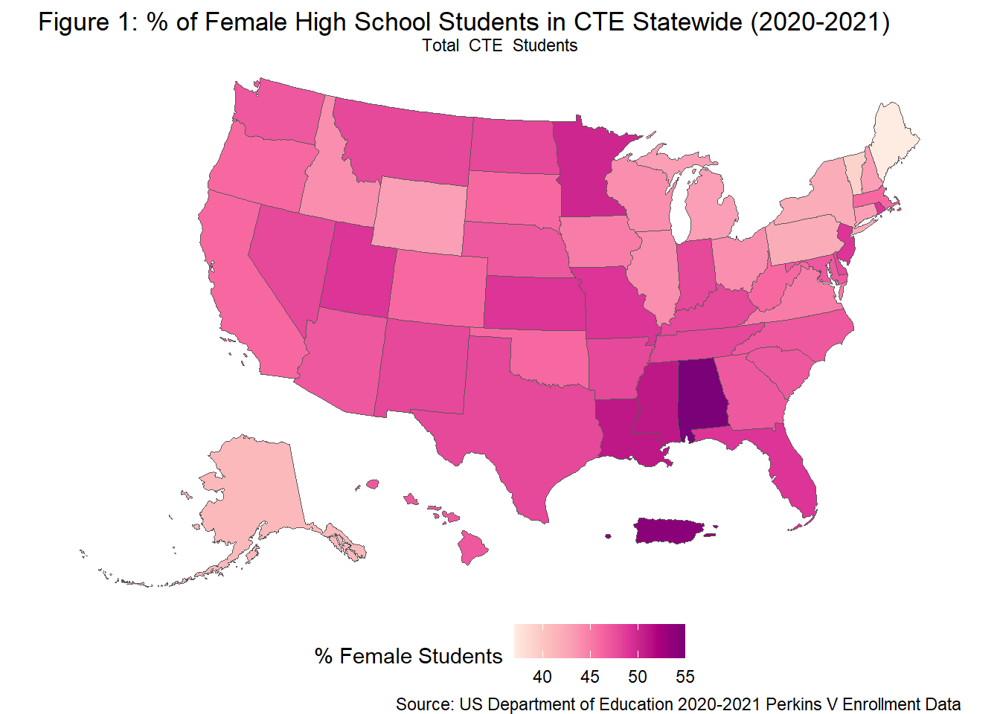
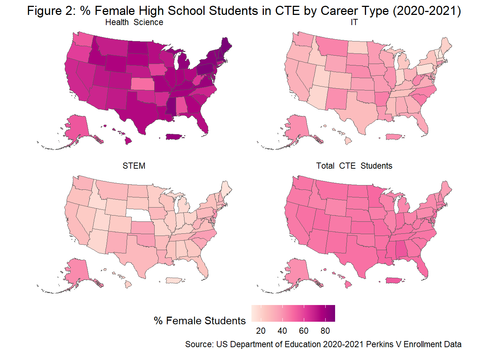
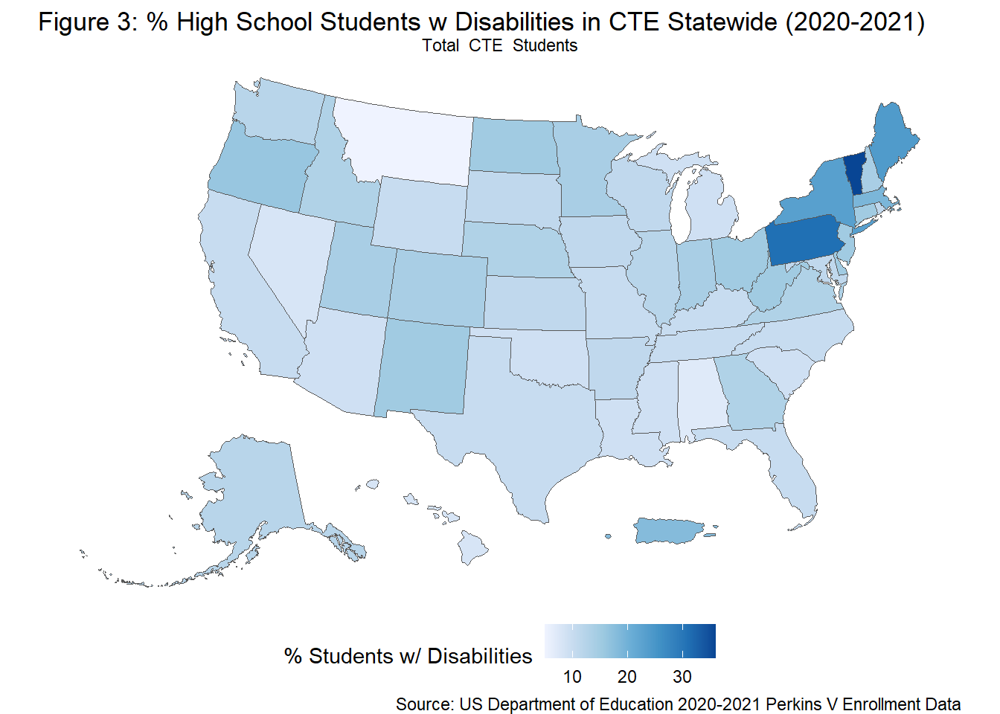
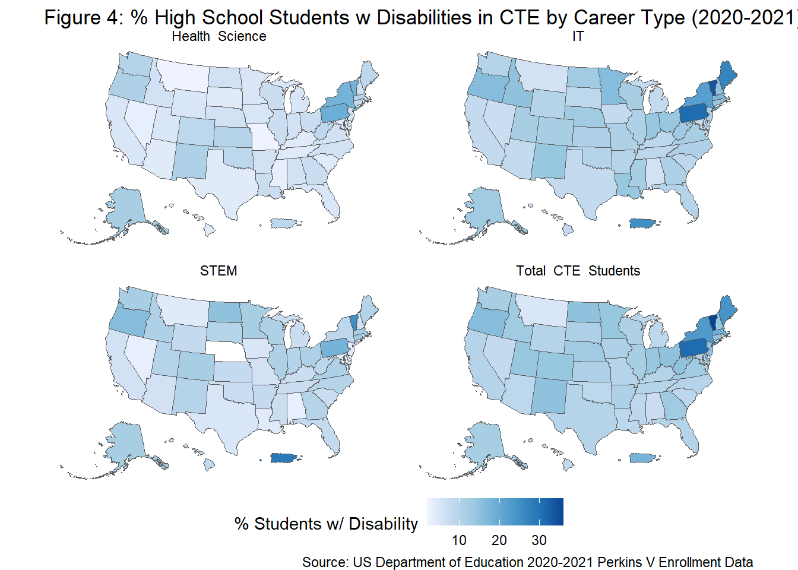
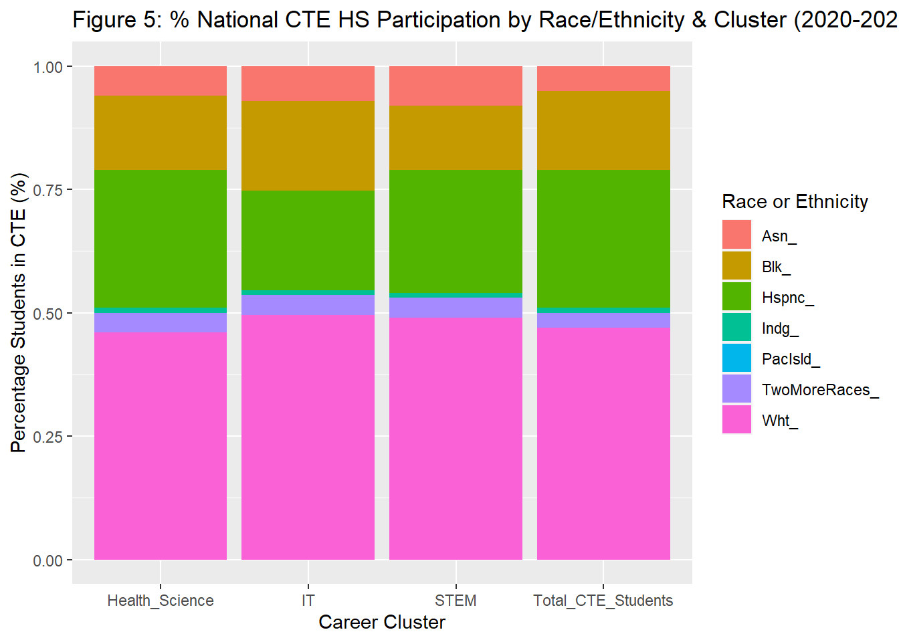
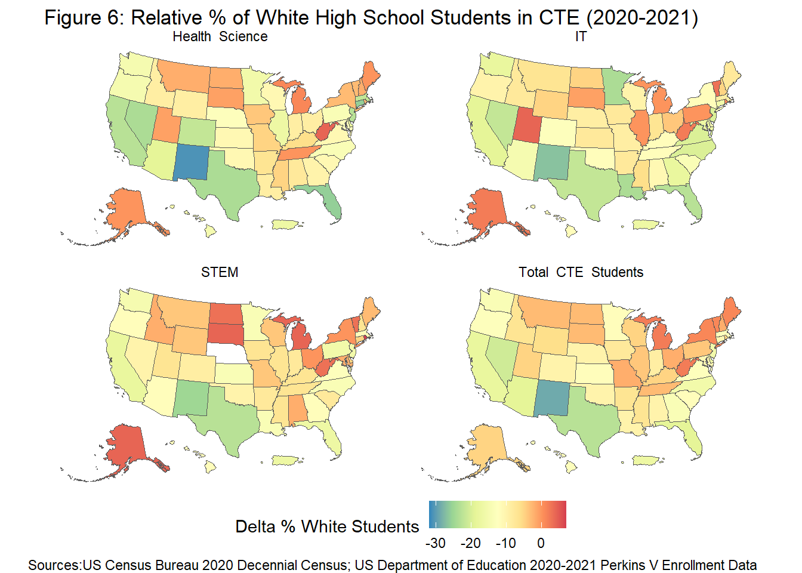
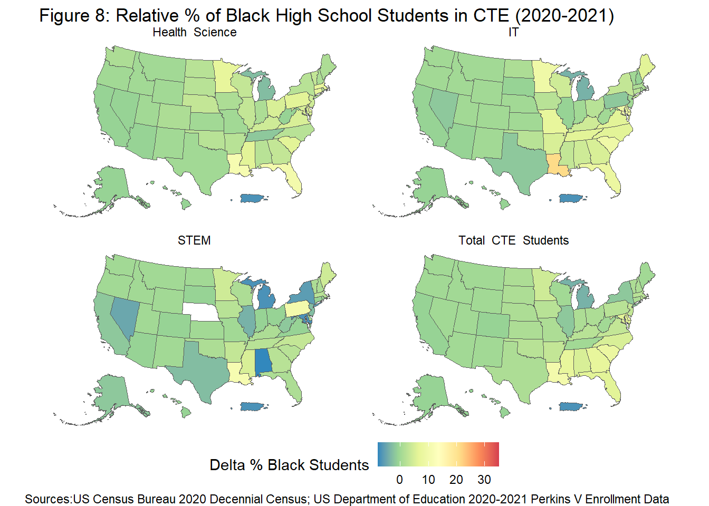
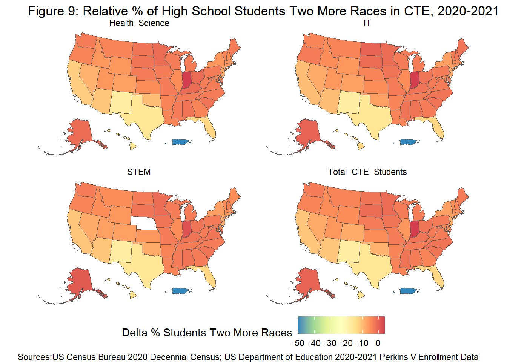
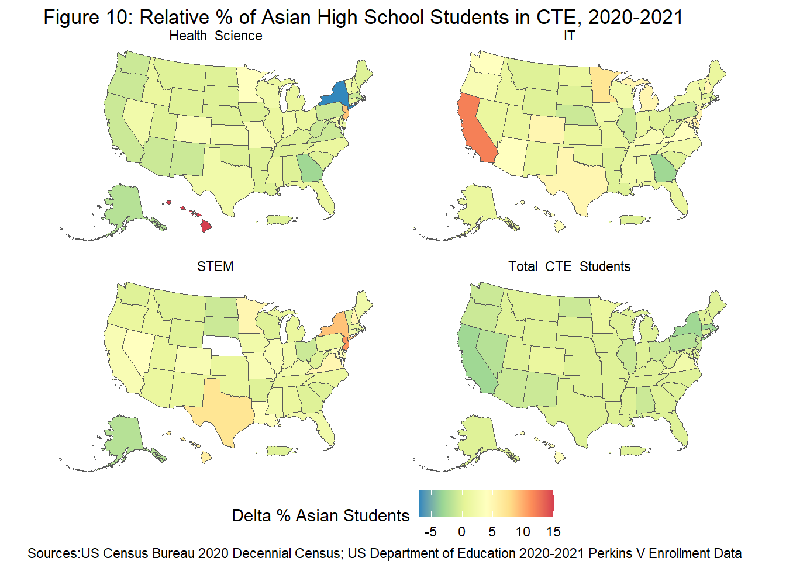
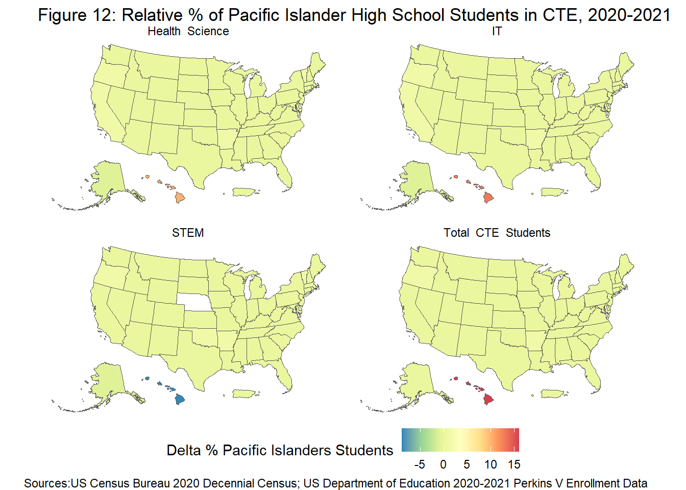

For my final project, I analyzed equity in access to Career & Technical Education (CTE) in 2021-2022 for 8,268,271 US high school students in each of of 3 underrepresented groups (Gender, Disability & Race), for each state, and in 3 distinct CTE career clusters:
IT
Health Science
STEM
I utilized the US Department of Education’s 2020-2021 Perkins V Data to analyze equity CTE participation. Equity in access was measured by the relative CTE participation of 3 student populations that are under represented in STEM careers:
Female Students
Students with Disabilities
Racially & Ethnically Diverse Students
The portion of Perkins V Population data set read in for analysis spanned 52 geographic areas (50 states, Puerto Rico, & the District of Columbia), 3 CTE career clusters, 3 under represented student populations, & 7 racial & ethnic categories.
In the 2020-2021 school year 910,652 US high school students took Health Sciences CTE courses, 898,942 US high school students took IT CTE courses, and 666,222 US high school students took STEM CTE courses.
To accurately compare racial & ethnic diversity of students in CTE between states, the racial diversity of each state was calculated using US Census Bureau 2020 Decennial Census Data. The Perkins V data set was joined with 2020 Race & Ethnicity Census data for each state. Relative racial & ethnic diversity of state CTE programs was calculated by finding the difference between the state’s racial diversity in secondary CTE programs and the state’s racial diversity from census data.
The racial & ethnic categories used were:
American Indian or Alaskan Native
Asian
Black or African American
Hispanic/Latino
Native Hawaiian or Other Pacific Islander
White
Two or More Races
Research Context
Career & Technical Education (CTE) courses expose students to high demand careers through hands on training. Under the 2018 Strengthening Career & Technical Education (CTE) for the 21st Century Act (aka Perkins V), states receive federal funding to provide CTE. States must develop plans for CTE delivery, report on CTE participation & performance, and conduct Comprehensive Needs Assessments (CNAs) on CTE at the local level.
States have to allocate a portion of their Perkins V funds to recruiting Special Populations in CTE - an umbrella category which include students with disabilities (SWDs), and students in fields where less than 25% of individuals are of any gender. Barriers to CTE access for special populations include:
Lack of Training for CTE Instructors on Working With Students With Disabilities (i.e. Developing IEPs & Providing Accommodations)
Stigma & Misconceptions About the Capabilities of Students With Disabilities
Historical Inequities of Who is Permitted to Participate in STEM Fields
I research equity in access and outcomes for secondary students with disabilities in CTE in my job at UMass Chan Medical School. To quote a policy brief I coauthored, “Research shows that CTE coursework in high school provides opportunities to improve employment and post-secondary outcomes for learners with disabilities, CTE has led to higher rates of on-time graduation, and more competitive paid jobs for secondary students with disabilities” (McKay, Ellison, & Narkewicz, 2022)
Even when female students, students with disabilities (SWDs), and racially diverse students are able to access CTE, they may be tracked into lower earning career clusters. The low participation of SWDs, female students, and Black Indigenous & People of Color (BIPOC) students in STEM fields inspired me to focus on CTE course in the IT, STEM, & Health Science career clusters.
Research Questions
RQ1. Did female secondary students equally participate in any CTE course & in STEM, Health Science, & IT career clusters in 2020-2021?
What states had the highest & lowest female participation in CTE?
Were female students under or over represented in any of the 3 career clusters?
RQ2. What percentage of secondary students with disabilities participated in any CTE course & in STEM, Health Science, & IT career clusters in 2020-2021?
What states had the highest & lowest participation of students with disabilities in CTE?
Were students with disabilities under or over represented in any of the 3 CTE career clusters?
RQ3. What is the racial & ethnic diversity of secondary CTE students in any CTE course & in STEM, Health Science, & IT career clusters in 2020-2021?
Was participation in CTE comparable between students of different racial & ethnic groups?
Was participation in STEM, Health, & IT CTE cluster comparable between students of different racial & ethnic groups?
Were there any states where racial or ethnic groups are relatively under represented or over represented?
Note: When interpreting answers to these research questions, it is important to note that all data is only for the 2020-2021 school year at the secondary CTE levels. Therefore these findings cannot be generalized to the participation of all CTE students in any school year.
Reading In the Data
For easier visualization & analysis, rows & columns containing demographic categories and CTE career clusters outside the specified variables for analysis were deleted upon read in. Data on students with disabilities at the secondary (high school) level is based on the Individuals with Disabilities & Elementary and Secondary Education Acts (IDEA/ESEA). Rows containing CTE participation data the territory of Palau were not read in as there was not corresponding 2020 census data for this geography. The grand total column was read as neither the gender nor race demographic columns summed to the correct total. More information on the complete Perkins V participation data set can be found in Appendix A.
Code
# Reading in necessary variablesCTE_DF <-read_excel("_Data/CTE_Enrollment_2020-2021.xlsx",skip =2,col_names =c("State", "Year", "Education_Level","Demographics", "Total_CTE_Students", "Delete_1", "Delete_2","Delete_3", "Delete_4", "Delete_5", "Delete_6", "Delete_7","Health_Science", "Delete_8","Delete_9", "IT", "Delete_10","Delete_11", "Delete_12", "STEM", "Delete_13","Delete_14")) %>%select(!contains("Delete")) %>%filter(str_detect(`Education_Level`,"Secondary")) %>%filter(!str_detect(`Demographics`,"Male")) %>%filter(!str_detect(`Demographics`,"Unknown")) %>%filter(!str_detect(`Demographics`,"Individuals from Economically Disadvantaged Families")) %>%filter(!str_detect(`Demographics`,"ADA")) %>%filter(!str_detect(`Demographics`,"Individuals Preparing for Non-traditional Fields")) %>%filter(!str_detect(`Demographics`,"English Learners")) %>%filter(!str_detect(`Demographics`,"Single Parents")) %>%filter(!str_detect(`Demographics`,"Out of Workforce Individuals")) %>%filter(!str_detect(`Demographics`,"Homeless Individuals")) %>%filter(!str_detect(`Demographics`, "Youth In Foster Care")) %>%filter(!str_detect(`Demographics`, "Youth with Parent in Active Military")) %>%filter(!str_detect(`Demographics`, "Migrant Students")) %>%filter(!str_detect(`State`, "Palau"))
Below is the Perkins V CTE data set after read in:
Code
CTE_DF
# A tibble: 520 × 8
State Year Education_Level Demographics Total…¹ Healt…² IT STEM
<chr> <chr> <chr> <chr> <chr> <chr> <chr> <chr>
1 Alaska 2020-2021 Secondary Grand Total 8249 1956 1528 1406
2 Alaska 2020-2021 Secondary Female 3400 1074 627 590
3 Alaska 2020-2021 Secondary American Indian… 1366 334 150 172
4 Alaska 2020-2021 Secondary Asian 495 73 105 54
5 Alaska 2020-2021 Secondary Black or Africa… 164 38 27 18
6 Alaska 2020-2021 Secondary Hispanic/Latino 590 118 116 89
7 Alaska 2020-2021 Secondary Native Hawaiian… 205 18 22 14
8 Alaska 2020-2021 Secondary White 4421 1153 931 880
9 Alaska 2020-2021 Secondary Two or More Rac… 1008 222 177 179
10 Alaska 2020-2021 Secondary Individuals Wit… 989 233 201 175
# … with 510 more rows, and abbreviated variable names ¹Total_CTE_Students,
# ²Health_Science
Tidying & Mutating Data
The original CTE data set was neither tidy nor easy to read. To compare the diversity in CTE between states & career clusters, my unit of analysis will be the population of secondary students in CTE for the year 2020-2021, in a state, in a specific CTE cluster, with a specific demographic identity (race, gender, disability).
Objectives of Tidying Data:
Removed redundant Year & Education Level columns as all data is for Secondary level students in the 2020-2021 year
Used pivot_longer() to combine the 3 CTE clusters & 1 state columns into 1 categorical Career Cluster column & 1 column of students counts
Converted the number of students column from character type to numeric type using parse_number()
Used pivot_wider() to separate out gender, race, and disability variables from the Demographics column into distinct columns
Code
#Remove redundant columnsTidy_CTE_DF <- CTE_DF %>%select(!contains("Year")) %>%select(!contains("Level")) %>%#Pivot Longer to Condense Career Clusters, also convert number of students to numeric typepivot_longer(cols ="Total_CTE_Students":"STEM", names_to ="Career Cluster",values_to ="Number of Students") %>%mutate(across(any_of(c("Number of Students")), parse_number)) %>%#Pivot wider demographic variablespivot_wider(names_from ="Demographics", values_from ="Number of Students")Tidy_CTE_DF
The tidy CTE data set hax dimensions of 208 x 12. There were 2 categorical columns (State, Career Cluster) & 10 numerical columns (The Grand Total of Students, Female Students, Students w/ Disabilities & the 7 columns for students counts of each of the 7 Race & Ethnicity Categories)
The 7 Race & Ethnicity Categories:
American Indian or Alaskan Native
Asian
Black or African American
Hispanic/Latino
Native Hawaiian or Other Pacific Islander
White
Two or More Races
Leaving racial data in un-pivoted format at this time allowed for the visualization of differences in CTE participation between states & CTE career clusters using US heat maps & facet_wrap.
Converting Counts to Percentages
To appropriately compare diversity in CTE participation between states of different population sizes I:
Converted counts of CTE students of each identity to percentages using mutate() and division by the grand total number of all secondary CTE students in the state
Removed counts from data frame for easier work with percentages
Code
#Converting participation from counts to percentagesCTE_Data_Percentage <- Tidy_CTE_DF %>%mutate(Percent_Female =round((`Female`/`Grand Total`)*100)) %>%mutate(Percent_Disabilities=round((`Individuals With Disabilities (ESEA/IDEA)`/`Grand Total`)*100)) %>%mutate (Percent_AmInd_AL_Ntv=round((`American Indian or Alaskan Native`/`Grand Total`)*100)) %>%mutate (Percent_Asian=round((`Asian`/`Grand Total`)*100)) %>%mutate (Percent_Black=round((`Black or African American`/`Grand Total`)*100)) %>%mutate (Percent_Hispanic=round((`Hispanic/Latino`/`Grand Total`)*100)) %>%mutate (Percent_NtvHI_PacIsld=round((`Native Hawaiian or Other Pacific Islander`/`Grand Total`)*100)) %>%mutate(Percent_White=round((`White`/`Grand Total`)*100)) %>%mutate(Percent_TwoMoreRaces=round((`Two or More Races`/`Grand Total`)*100)) %>%rename("Delete1"="Female") %>%rename("Delete2"="American Indian or Alaskan Native") %>%rename("Delete3"="Asian") %>%rename("Delete4"="Black or African American") %>%rename("Delete5"="Hispanic/Latino") %>%rename("Delete6"="Native Hawaiian or Other Pacific Islander") %>%rename("Delete7"="White") %>%rename("Delete8"="Two or More Races") %>%rename("Delete9"="Individuals With Disabilities (ESEA/IDEA)") %>%select(!contains("Delete"))#Remove Nebraska N/A STEM row before combining with census dataCTE_Data_Percentage <- CTE_Data_Percentage %>%drop_na()
Calculating Relative Racial Diversity Using tidycensus & Join
To calculate relative racial diversity of students participating in CTE I:
Obtained an API Key from the US Census Bureau to access census data
Identified appropriate race & data census variables from the 2020 decennial census using the tidy_census() package and load_variable() function
Created a data frame with the desired race & ethnicity variables & inherit geometry for future mapping using the get_decennial() function
Pivoted census data wider to create columns for each racial group
Converted census race data from counts to percentages and removed count columns
Left joined CTE percentage data to the racial census percentage data by State
Calculated relative CTE racial diversity in a state using the formula Delta RaceX CTE = (% of High Students in State CTE who are of X Race) - (% of People of X Race in State Census)
# creating 2020 decennial census race data frame with desired variables and geometrycensus_2020_race_df <-get_decennial(geography ="state",variables =c ( "Total_Census"="P1_001N", "White_Census"="P1_003N","Black_Census"="P1_004N","AmInd_ALNatve_Census"="P1_005N","Asian_Census"="P1_006N","NativeHI_Census"="P1_007N","TwoMore_Census"="P1_009N","Hispanic_Census"="P2_002N"),year =2020,sumfile ="pl",geometry =TRUE,resolution ="20m") %>%shift_geometry() # pivot wider by race variables & remove "Other" variable to mirror the tidy CTE data format Census_Race_Date_Wider <-pivot_wider( census_2020_race_df, names_from ="variable", values_from ="value") %>%select(!contains("Other"))#Convert census race data to percentages & remove counts Census_Race_Data_Percent <- Census_Race_Date_Wider %>%mutate (Percent_Census_AmInd_AL_Ntv=round((`AmInd_ALNatve_Census`/`Total_Census`)*100)) %>%mutate (Percent_Census_Asian=round((`Asian_Census`/`Total_Census`)*100)) %>%mutate (Percent_Census_Black=round((`Black_Census`/`Total_Census`)*100)) %>%mutate (Percent_Census_NtvHI_PacIsld=round((`NativeHI_Census`/`Total_Census`)*100)) %>%mutate (Percent_Census_Hispanic=round((`Hispanic_Census`/`Total_Census`)*100)) %>%mutate(Percent_Census_White=round((`White_Census`/`Total_Census`)*100)) %>%mutate(Percent_Census_TwoMoreRaces=round((`TwoMore_Census`/`Total_Census`)*100)) %>%rename("State"="NAME") %>%select(!contains("AmInd_ALNatve")) %>%select(!contains("Asian_Census")) %>%select(!contains("Black_Census")) %>%select(!contains("Hispanic_Census")) %>%select(!contains("NativeHI_Census")) %>%select(!contains("White_Census")) %>%select(!contains("TwoMore_Census"))
After some experimentation I discovered that joining the CTE data to the census data maintained the inherent tidycensus() geometry needed for mapping for the joined data set. I therefore left joined the CTE_Data_Percentage data set to the Census_Race_Data_Percent using the categorical State variable as the key.
Code
#Left join of CTE_Data in Percents to Census_Data in PercentsJoined_CTE_Data <- Census_Race_Data_Percent %>%left_join (CTE_Data_Percentage, by ="State")
Calculating Relative Racial Diversity
To compare relative racial & ethnic CTE diversity between states & CTE concentrations, I calculated how many percentage points more or less the state’s CTE program or concentration racial & ethnic diversity was compared to the state’s overall racial & ethnic diversity.
For each of the 7 racial & ethnic categories, a Delta_Percentage was calculated using the formula (% of High Students in State CTE who are of X Race) - ( % of People of X Race in State Census)
Overall, nearly 4 million female high school students participated in US CTE courses in the 2020-2021 school year. In the same year, nearly 65,000 female students were in Health Science courses, just under 33,000 female students were in IT courses, and just over 18,000 female students were in STEM courses at the secondary level.
47% of all secondary students participating in CTE in 2020-2021 were female.
Code
#Generating a tibble with the sum of all females in CTE, Sum of all students in CTE, & the % tot remale in CTETidy_CTE_DF %>%group_by(`Career Cluster`) %>%select(`State`, `Career Cluster`, `Female`, `Grand Total`) %>%summarise(`TotalCountFemaleCTE`=sum(`Female`, na.rm=TRUE), `SumGrandTotalCTE`=sum(`Grand Total`, na.rm=TRUE), `PercentTotFemale`=round((`TotalCountFemaleCTE`/`SumGrandTotalCTE`)*100))
Fig. 1 below is a heat map below of the percentage of female high school student in CTE statewide for the 2020-2011 year. The majority of states had CTE programs with 45%-50% female students. Across all career clusters, the majority of states came close to gender parity in total CTE participation. A handful of Southern states & Puerto Rico exceed total 55% female participation in CTE. In contrast, several Northeastern states and Alaska had total female participation under 40% or in the low 40%.
Code
#Select only CTE total rows for statewide CTE clustersTotCTEPercent <- Delta_CTE_Data %>%filter(str_detect(`Career Cluster`, "Total_CTE_Students"))#Graph the Total Female Participation in any CTE course in %ggplot(data = TotCTEPercent, aes(fill =`Percent_Female`)) +geom_sf() +scale_fill_distiller(palette ="RdPu", direction =1) +labs(title ="Figure 1: % of Female High School Students in CTE Statewide (2020-2021)",caption ="Source: US Department of Education 2020-2021 Perkins V Enrollment Data",fill ="% Female Students") +theme_void() +facet_wrap(vars(`Career Cluster`)) +theme(legend.position ="bottom")

Five states had more than 50% female participation in CTE at the secondary level in 2020-2021:
55% of Alabama’s high school CTE students were female, the highest % of any state
54% of Puerto Rico’s high school CTE students were female, the second highest %
51% of the District of Columbia, Louisiana, & Mississippi’s high school CTE students were female
Code
#slicing top 10 states for nationwide female CTE participationTotCTEPercent %>% as.data.frame %>%filter(str_detect(`Career Cluster`, "Total_CTE_Students")) %>%arrange(desc(`Percent_Female`)) %>%select(`State`, `Percent_Female`) %>%slice(1:10) %>%rename("% Female Students in CTE"="Percent_Female")
State % Female Students in CTE
1 Alabama 55
2 Puerto Rico 54
3 District of Columbia 51
4 Louisiana 51
5 Mississippi 51
6 Minnesota 50
7 Missouri 49
8 Kansas 49
9 Rhode Island 49
10 Florida 49
Two states had less than 40% female participation in CTE at the secondary level in 2020-2021. There were 7 states that had female participation in CTE between 40%-43%.
37% of Maine’s highs school CTE students were female, the lowest of any state
39% of Vermont’s high school CTE students were female, the second lowest
41% of Alaska’s high school CTE students were female
42% of New York & Pennsylvania’s high school CTE students were female
43% of Michigan, Wyoming, New Hampshire, & Connecticut’s high school CTE students were female
Code
#slicing top 10 states for nationwide female CTE participationDelta_CTE_Data %>% as.data.frame %>%filter(str_detect(`Career Cluster`, "Total_CTE_Students")) %>%arrange(`Percent_Female`) %>%select(`State`, `Percent_Female`) %>%slice(1:10) %>%rename("% Female Students in CTE"="Percent_Female")
State % Female Students in CTE
1 Maine 37
2 Vermont 39
3 Alaska 41
4 New York 42
5 Pennsylvania 42
6 Michigan 43
7 Wyoming 43
8 New Hampshire 43
9 Connecticut 43
10 Illinois 44
Female students nationally are over represented in Health Science CTE courses and under represented in STEM & IT CTE courses
71% of total high school students nationwide enrolled in a Health Science CTE course were female in the 2020-2021 year
37% of total high school students nationwide enrolled in an IT CTE course were female in the 2020-2021 year
27% of total high school students nationwide enrolled in a STEM CTE course were female in the 2020-2021 year
Potential Health Science careers can have a lower earning potential than STEM & IT careers. For example home health aids, medical office assistance, & nursing assistants are Health Science careers, while software developer, statistician, engineer, and nuclear technicians fall under IT & STEM. It is therefor troubling that far fewer female students were in IT or STEM courses.
Fig. 2 below is a heat map of CTE participation of female students by CTE career cluster for the 2020-2021 high school year using facet_wrap(). The over-representation of female students in Health Science courses is shown by the deep purple-pink fill representing 80% female participation. The Total CTE heat map in Fig. 2 is paler than the heat map in Fig. 1, while had a much maximum female participation scale of only 55%. By visual contrast, there are far fewer than 50% female participating in IT & STEM. The IT & STEM heat maps are much lighter than the Total CTE Students one, showing the under-representation of female high school students in these 2 career clusters. Female participation in STEM courses was particularly low, resulting in a very pale pink heat map. Note that Nebraska is white in this heat map as there was participation data at the STEM level in the state
Code
#Graph comparing female CTE participation between IT, Health Science, STEM, Overallggplot(data = Delta_CTE_Data, aes(fill =`Percent_Female`)) +geom_sf() +scale_fill_distiller(palette ="RdPu", direction =1) +labs(title ="Figure 2: % Female High School Students in CTE by Career Type (2020-2021)",caption ="Source: US Department of Education 2020-2021 Perkins V Enrollment Data",fill ="% Female Students") +theme_void() +facet_wrap(vars(`Career Cluster`)) +theme(legend.position ="bottom")

Students with Disabilities Participation in CTE - RQ 2
Overall, 935,962 total high school students with disabilities (SWDs) participated in US CTE courses in the 2020-2021 school year. Looking at US high school students in 2020-2021, there were 56,304 SWDs in Health Science courses, 96,0027 SWDs in IT courses, and 54,811 SWDs in STEM courses.
11% of all secondary students participating in CTE in 2020-2021 had disabilities.
According to the National Center for Education Statistics (2022), ~15% of US public school students ages 3-21 qualified for special education under IDEA in the 2020-2021 school year. This is not a high-school specific number, but suggests the participation of SWDs in high school CTE courses was comparable to the percentage of SWDs in US public schools for the 2020-2021 year.
Code
#Sum/Percentage SWDs in CTE nationwide & each career clusterTidy_CTE_DF %>%group_by(`Career Cluster`) %>%select(`State`, `Career Cluster`, `Individuals With Disabilities (ESEA/IDEA)`, `Grand Total`) %>%summarise(`TotalCountSWDCTE`=sum(`Individuals With Disabilities (ESEA/IDEA)`, na.rm=TRUE), `SumGrandTotalCTE`=sum(`Grand Total`, na.rm=TRUE), `PercentSWDCTE`=round((`TotalCountSWDCTE`/`SumGrandTotalCTE`)*100)) %>%select(!contains("Grand")) %>%rename("National Count SWDs"="TotalCountSWDCTE") %>%rename("National % SWDs"="PercentSWDCTE")
Fig. 3 below is a heat map of percentage of high school students with a disability in CTE statewide for the 2020-2011 year. The majority of states have CTE programs made up of ~10% students with disabilities (SWDs). No states appear to have extremely low participation of students with disabilities. Several Northeastern states appear to have CTE programs made up of between 20-35% SWDs.
Code
#Graph Total Student with Disabilities Participation in CTE ggplot(data = TotCTEPercent, aes(fill =`Percent_Disabilities`)) +geom_sf() +scale_fill_distiller(palette ="Blues", direction =1) +labs(title ="Figure 3: % High School Students w Disabilities in CTE Statewide (2020-2021)",caption ="Source: US Department of Education 2020-2021 Perkins V Enrollment Data",fill ="% Students w/ Disabilities") +theme_void() +facet_wrap(vars(`Career Cluster`)) +theme(legend.position ="bottom")

Seven states had greater than 15% nationwide participation of students with disabilities in CTE at the secondary level in 2020-2021:
36% of Vermont’s high school CTE students had disabilities, the highest % of any state
31% of Pennsylvania’s high school CTE students had disabilities, the second highest % of any state
24% of Maine’s high school CTE students had disabilities
23% of New York’s high school CTE students had disabilities
19% of Massachusetts’ high school CTE students had disabilities
18% of Puerto Rico’s high school CTE students had disabilities
16% of Oregon’s high school CTE students had disabilities
It is important to research further if the states where students with disabilities appear to be over-represented in CTE courses at the high school level if are being tracked into low-wage CTE career clusters.
Code
#slicing top 10 states for nationwide SWD in CTE participationTotCTEPercent %>% as.data.frame %>%filter(str_detect(`Career Cluster`, "Total_CTE_Students")) %>%arrange(desc(`Percent_Disabilities`)) %>%select(`State`, `Percent_Disabilities`) %>%slice(1:10) %>%rename("% SWD in CTE"="Percent_Disabilities")
State % SWD in CTE
1 Vermont 36
2 Pennsylvania 31
3 Maine 24
4 New York 23
5 Massachusetts 19
6 Puerto Rico 18
7 Oregon 16
8 Delaware 15
9 New Mexico 15
10 Connecticut 15
Four states had less that 9% national participation of students with disabilities in CTE at the secondary level in 2020-2021:
5% of Montana’s high school CTE students had disabilities, the lowest % of any state
7% of Alabama’s high school CTE students had disabilities
8% of Nevada & Hawaii’s high school CTE students had disabilities
Code
#slicing top 10 states for nationwide SwD CTE participationDelta_CTE_Data %>% as.data.frame %>%filter(str_detect(`Career Cluster`, "Total_CTE_Students")) %>%arrange(`Percent_Disabilities`) %>%select(`State`, `Percent_Disabilities`) %>%slice(1:10) %>%rename("% SWD in CTE"="Percent_Disabilities")
State % SWD in CTE
1 Montana 5
2 Alabama 7
3 Nevada 8
4 Hawaii 8
5 Louisiana 9
6 Michigan 9
7 Arizona 9
8 Mississippi 9
9 Oklahoma 9
10 South Carolina 9
Students with disabilities were under-represented in Health Sciences & STEM CTE courses nationally in 2020-2021
6% of total high school students nationwide enrolled in a Health Science CTE course had a disability in the 2020-2021 year
11% of total high school students nationwide enrolled in an IT CTE course had a disability in the 2020-2021 year
8% of total high school students nationwide enrolled in a STEM CTE course were female in the 2020-2021 year
These results suggest SWDs may have been tracked out of Health Science & STEM CTE courses, but were not tracked out of IT CTE courses. This may be due to IT career pathways not requiring as much interpersonal skills as the Health Science career field.
Fig. 4 below is a heat map of CTE participation of SWDs by career cluster for the 2020-2021 high school year, using facet_wrap(). The national participation of high school SWDs in any CTE course closely resembles the participation of high school SWDs in IT courses for the 2020-2021 year. Both the Total CTE Students and IT facets of the heat map show a higher percentage of SWDs in Northeastern states.
The STEM heat map is slightly lighter than the Total CTE or IT heat maps in Fig. 4, suggesting a slight under-representation of SWDs. in STEM course, with the exception of in Puerto Rico. Note that Nebraska is white in this heat map as there was participation data at the STEM level in the state The Health Science heat map is the lightest of all career clusters in Fig. 4, corresponding to the lowest percentage of SWDs in any career cluster. The difference in participation of students with disabilities between CTE clusters in Fig. 4 is much less dramatic than the difference in participation of female student in CTE clusters in Fig. 2.
Code
#Graph comparing SWD CTE participation between IT, Health Science, STEM, Overallggplot(data = Delta_CTE_Data, aes(fill =`Percent_Disabilities`)) +geom_sf() +scale_fill_distiller(palette ="Blues", direction =1) +labs(title ="Figure 4: % High School Students w Disabilities in CTE by Career Type (2020-2021)",caption ="Source: US Department of Education 2020-2021 Perkins V Enrollment Data",fill ="% Students w/ Disability") +theme_void() +facet_wrap(vars(`Career Cluster`)) +theme(legend.position ="bottom")

Racial & Ethnic Diversity in CTE Participation - RQ 3
From highest to lowest, the following counts of students in racial & ethnic groups participated in secondary level CTE in the 2020-2021 year:
3,857,162 White students
2,325,769 Hispanic or Latino students
1,304,866 Black students students
377,667 Asian CTE students
288,754 students who identify as being Two or More Races
85,760 American Indian or Alaskan Native students
28,274 Native Hawaiian or Other Pacific Islander students
Note: CTE students can fall in more than 1 racial & ethnic category, meaning racial & ethnic percentages should not add up to 100. For example, a student could identify as both White and Hispanic
Code
#Sum of nationwide count CTE in each of 7 race & ethnicity categoriesSumCTE_Race <- Tidy_CTE_DF %>%group_by(`Career Cluster`) %>%select(`State`, `Career Cluster`, `Grand Total`, `American Indian or Alaskan Native`, `Asian`, `Black or African American`, `Hispanic/Latino`, `Native Hawaiian or Other Pacific Islander`, `White`, `Two or More Races`) %>%summarise(`SumGrndTotCTE`=sum(`Grand Total`, na.rm =TRUE),`SumIndg_CTE`=sum(`American Indian or Alaskan Native`, na.rm=TRUE), `SumAsn_CTE`=sum(`Asian`, na.rm=TRUE), `SumBlk_CTE`=sum(`Black or African American`, na.rm=TRUE),`SumHspnc_CTE`=sum(`Hispanic/Latino`, na.rm=TRUE), `SumPacIsld_CTE`=sum(`Native Hawaiian or Other Pacific Islander`, na.rm=TRUE), `SumWht_CTE`=sum(`White`, na.rm=TRUE),`SumTwoMoreRaces_CTE`=sum(`Two or More Races`, na.rm=TRUE))
Compared to 2020 Decennial Census, US high school CTE programs had a higher percentage of non-white students in 2020-2021 than the nation as a whole.
61% of 2020 US Census participants were White, compared to only 46% of high school students in CTE
20% of US Census participants were Hispanic, compared to 28% of high school students in CTE
12% of US Census participants were Black, compared to 15% of high school students in CTE
6% of US Census participants were Asian compared to 4.5% of high school students in CTE
11% of US Census participants were Two or More Races, compared to 3.5% of high school students in CTE
1% of US Census participants & high school students in CTE were American Indian or Alaskan Native
<1% of US Census participants & high school students in CTE were Pacific Islander or Hawaiian Native
Black & Hispanic high students were relatively over-represented in CTE compared to census data, while White, Asian, & Two or More Races high school students were relatively under represented in CTE for the 2020-2021 year.
Code
# Percent Overall Race & Ethnicity in CTEPercent_TotRaceCTE <- SumCTE_Race %>%mutate(`PercentIndgCTE`=round((`SumIndg_CTE`/`SumGrndTotCTE`)*100)) %>%mutate(`PercentAsnCTE`=round((`SumAsn_CTE`/`SumGrndTotCTE`)*100)) %>%mutate(`PercentBlkCTE`=round((`SumBlk_CTE`/`SumGrndTotCTE`)*100)) %>%mutate(`PercentHspncCTE`=round((`SumHspnc_CTE`/`SumGrndTotCTE`)*100)) %>%mutate(`PercentPacIsldCTE`=round((`SumPacIsld_CTE`/`SumGrndTotCTE`)*100)) %>%mutate(`PercentWhtCTE`=round((`SumWht_CTE`/`SumGrndTotCTE`)*100)) %>%mutate(`PercentTwoMoreRacesCTE`=round((`SumTwoMoreRaces_CTE`/`SumGrndTotCTE`)*100)) %>%select(!contains("Sum"))#Pivoted Percent Census DataCensus_Tot_Race_Percent <- Census_Race_Date_Wider %>% as.data.frame %>%select(`NAME`, `Total_Census`, `White_Census`, `Black_Census`, `AmInd_ALNatve_Census`, `Asian_Census`, `NativeHI_Census`, `TwoMore_Census`, `Hispanic_Census`) %>%#Sum Census Data by Race & Ethnicitysummarise(`Sum_Total_Census`=sum(`Total_Census`, na.rm=TRUE), `Sum_Wht_Census`=sum(`White_Census`, na.rm=TRUE), `Sum_Blk_Census`=sum(`Black_Census`, na.rm=TRUE),`Sum_Indg_Census`=sum(`AmInd_ALNatve_Census`, na.rm=TRUE),`Sum_Asn_Census`=sum(`Asian_Census`, na.rm=TRUE),`Sum_PacIsld_Census`=sum(`NativeHI_Census`, na.rm=TRUE),`Sum_TwoMoreRace_Census`=sum(`TwoMore_Census`, na.rm=TRUE),`Sum_Hsp_Census`=sum(`Hispanic_Census`, na.rm=TRUE)) %>%#Percent Census Data by Race & Ethnicitymutate (Wht_ =round((`Sum_Wht_Census`/`Sum_Total_Census`)*100)) %>%mutate (Blk_ =round((`Sum_Blk_Census`/`Sum_Total_Census`)*100)) %>%mutate (Indg_ =round((`Sum_Indg_Census`/`Sum_Total_Census`)*100)) %>%mutate (Asn_ =round((`Sum_Asn_Census`/`Sum_Total_Census`)*100)) %>%mutate (PacIsld_=round(`Sum_PacIsld_Census`/`Sum_Total_Census`)*100) %>%mutate (TwoMoreRaces_ =round((`Sum_TwoMoreRace_Census`/`Sum_Total_Census`)*100)) %>%mutate(Hspnc_ =round((`Sum_Hsp_Census`/`Sum_Total_Census`)*100)) %>%select(!contains("Sum")) %>%#pivot longerpivot_longer(cols =contains("_"), names_to ="Race or Ethnicity",values_to ="Percent Census(%)")
I pivoted race & ethnicity data in percent for longer into a categorical Race or Ethnicity column & a numerical Percent Students in CTE column to examine national CTE participation by race & ethnicity prior to calculating relative participation based on the US census data. By using a stacked bar chart with percentages I could graph differences between CTE clusters and racial & ethnic groups at once, which I could not on the US heat map.
Code
#Pivot longer race & ethnicity categorical variablesPivoted_Perc_CTE_Race <- Percent_TotRaceCTE %>%rename( `Indg_`=`PercentIndgCTE`) %>%rename(`Asn_`=`PercentAsnCTE`) %>%rename(`Blk_`=`PercentBlkCTE`) %>%rename(`Hspnc_`=`PercentHspncCTE`) %>%rename(`PacIsld_`=`PercentPacIsldCTE`) %>%rename(`Wht_`=`PercentWhtCTE`) %>%rename(`TwoMoreRaces_`=`PercentTwoMoreRacesCTE`) %>%pivot_longer(cols =contains("_"), names_to ="Race or Ethnicity",values_to ="Percent Students in CTE (%)")
Fig 5 is a stacked bar chart of the national percentage of high students by race & ethnicity across CTE clusters for the 2020-2021 school year. It enables a side by side comparison of the percentage of CTE students of each Race & Ethnicity between CTE career clusters.
White studentswee the most common racial/ethnic group in CTE, making up just under 50% of all CTE participants nationwide.
There is a slightly larger percentage of White students in IT & STEM than in Health Science & Total CTE. There is a smaller percentage of students of Two or More Races in total CTE than in any of the STEM 3 concentrations.
Pacific Islander/Hawaiian Native & American Indian/Alaskan Native who each made up less that 1% of all CTE students & had negligible bar segments in Fig. 5
Hispanic students were the second most common racial/ethnic group in CTE, but there is a lower percentage of Hispanic students in IT & STEM than in Health Science & Total CTE courses.
Black students were the third most common racial/ethnic group in CTE at the the national level, but a lower percentage of Black students participated in STEM compared to the other 2 career clusters & Total high school CTE.
Lastly, there was a lower percentage of Asian students in Health Science & Total CTE than in STEM & IT, the opposite of what was observed for most racial/ethnic groups
Code
#Figure 5, CTE Race Bar Chart by %ggplot(Pivoted_Perc_CTE_Race, aes(fill=`Race or Ethnicity`, y=`Percent Students in CTE (%)`, x =`Career Cluster`)) +geom_bar(position="fill", stat="identity") +ggtitle("Figure 5: % National CTE HS Participation by Race/Ethnicity & Cluster (2020-2021)") +labs(x="Career Cluster", y="Percentage Students in CTE (%)")

To compare the relative CTE participation by race & ethnicity between states & career clusters, I created a heat map with facet_wrap() by CTE Cluster for each race & ethnicity category. As the calculated delta CTE participation by race displays if the state’s CTE cluster is more or less diverse than the state as whole, the divergent Spectral color palette was utilized for the heat map. Each racial & ethnic group was mapped, going from the group with the highest percentage of total CTE participation to the group with the lowest percentage of total CTE participation.
Note Nebraska is white in all heat maps for the STEM CTE Career Cluster, as there was no data for this state & career cluster in the 2020-2021 year
Relative White CTE Participation Heat Map
The relative percentage of White secondary students in CTE shown in Fig.6 ranged from -30% - 0%.This figure’s scale highlights how relatively under represented White students are in CTE compared to Census diversity. Across all CTE courses & clusters there appears to be more White students in Northern & Northeast states & Alaska, as indicated by orange-red fill. In contrast, White students are consistently under represented in Arizona across all career clusters, especially in Health Science.
There appears to be slightly lower percentage of White students in Health Science as opposed to IT & STEM, as indicated by deeper blue & green fill.
Code
##Plot Relative Whiteggplot(data = Delta_CTE_Data, aes(fill =`DeltaPercentWhite`)) +geom_sf() +scale_fill_distiller(palette ="Spectral", direction =-1) +labs(title ="Figure 6: Relative % of White High School Students in CTE (2020-2021)",caption ="Sources:US Census Bureau 2020 Decennial Census; US Department of Education 2020-2021 Perkins V Enrollment Data",fill ="Delta % White Students") +facet_wrap(vars(`Career Cluster`)) +theme_void() +theme(legend.position ="bottom")

Relative Hispanic CTE Participation Heat Map
The relative over-representation of Hispanic high school students in CTE in the 2020-2021 school year compared to Census diversity is apparent in Fig. 7. This is both because of the heat map scale ranging from -5% to +15%, & the orange-red South West portion of the Total CTE map, indicating 15% more Hispanic participation in CTE than % of Hispanic individuals in the state. Hispanic students are under-represented in IT courses in Utah & in STEM courses in New York, shown with the blue fill in those states. Hispanic high school students have higher relative participation in Health Science career courses than in IT or STEM courses.
Code
##Plot Relative Hispanicggplot(data = Delta_CTE_Data, aes(fill =`DeltaPercentHispanic`)) +geom_sf() +scale_fill_distiller(palette ="Spectral", direction =-1) +labs(title ="Figure 7: Relative % of Hispanic High School Students in CTE (2020-2021)",caption ="Sources:US Census Bureau 2020 Decennial Census; US Department of Education 2020-2021 Perkins V Enrollment Data",fill ="Delta % Hispanic Students") +facet_wrap(vars(`Career Cluster`)) +theme_void() +theme(legend.position ="bottom")
Relative Black CTE Partipation Heat Map
Fig. 8 below shows that while Black students were relatively over represented in CTE when to census data, it was only slightly. This is indicated by Fig. 8’s fully positive scale of Delta % Black students in CTE in combination with all 4 facet_wrapped heat maps filled with green-blue indicating a Delta % Blacks students close to zero. Lastly, Black high school students participated less in STEM than in IT or Health Science CTE courses in 2020-2021.
Code
#Plot Relative Blackggplot(data = Delta_CTE_Data, aes(fill =`DeltaPercentBlack`)) +geom_sf() +scale_fill_distiller(palette ="Spectral", direction =-1) +labs(title ="Figure 8: Relative % of Black High School Students in CTE (2020-2021)",caption ="Sources:US Census Bureau 2020 Decennial Census; US Department of Education 2020-2021 Perkins V Enrollment Data",fill ="Delta % Black Students") +facet_wrap(vars(`Career Cluster`)) +theme_void() +theme(legend.position ="bottom")

Relative Two or More Races CTE Participation Heat Map
Fig. 9 is strikingly red & orange, but based on the legend scale of -50% to 0% this does not indicate high relative TE participation of students of Two or More Race. After closer examination, it appears that the heat map & scale is skewed by the dark blue outlier of Puerto Rico, which has a Delta % Students of Two or More Races as -50%. This suggests that there are 50% more students of Two or More Races in Puerto Rico Census data in high school CTE courses in 2020-2021.
Code
#Plot Delta Two More Racesggplot(data = Delta_CTE_Data, aes(fill =`DeltaPercentTwoMoreRaces`)) +geom_sf() +scale_fill_distiller(palette ="Spectral", direction =-1) +labs(title ="Figure 9: Relative % of High School Students Two More Races in CTE, 2020-2021",caption ="Sources:US Census Bureau 2020 Decennial Census; US Department of Education 2020-2021 Perkins V Enrollment Data",fill ="Delta % Students Two More Races") +facet_wrap(vars(`Career Cluster`)) +theme_void() +theme(legend.position ="bottom")

I confirmed from the original Census & Perkins V the percentage of Puerto Rican’s of Two or More Races in the 2020-2021 was high, at 50%. In contrast, 0% of high school CTE students in Puerto Rico in 2020-2021 were of Two or More Races. This could be due to either disparities in participation or in how two or more races are measured in the Census vs. Perkins V.
Code
# % Puerto Rico Two More Races Census PR_Race_Percent <- Census_Race_Data_Percent %>% as.data.frame %>%filter(str_detect(`State`, "Puerto")) %>%select(`State`, `Percent_Census_TwoMoreRaces`)PR_Race_Percent
State Percent_Census_TwoMoreRaces
1 Puerto Rico 50
Code
#% Puerto Rico Two More Races CTE DataPR_CTE_Percent <- CTE_Data_Percentage %>%filter(str_detect(`State`, "Puerto")) %>%select(`State`, `Percent_TwoMoreRaces`)PR_CTE_Percent
# A tibble: 4 × 2
State Percent_TwoMoreRaces
<chr> <dbl>
1 Puerto Rico 0
2 Puerto Rico 0
3 Puerto Rico 0
4 Puerto Rico 0
Relative Asian CTE Participation Heat Map
As shown in Fig. 10 below, Asian Students were one of the racial & ethnic groups under represented in high school CTE courses in 2020-2021 when compared to Census diversity. Asian students were relatively under represented in Health Science in New York (Delta% = -5%), & over represented in Health Science in Hawaii (Delta% = +15%). Asian students were also relatively over represented in IT in the state of California (Delta% = +10%).
Code
#Plot Delta Asianggplot(data = Delta_CTE_Data, aes(fill =`DeltaPercentAsian`)) +geom_sf() +scale_fill_distiller(palette ="Spectral", direction =-1) +labs(title ="Figure 10: Relative % of Asian High School Students in CTE, 2020-2021",caption ="Sources:US Census Bureau 2020 Decennial Census; US Department of Education 2020-2021 Perkins V Enrollment Data",fill ="Delta % Asian Students") +facet_wrap(vars(`Career Cluster`)) +theme_void() +theme(legend.position ="bottom")

Relative Indigenous CTE Participication Heat Map
Fig. 11 shows the relative percentage of American Indians Native Alaskans in CTE courses on a heat map, facet_wrapped() by career clusters. I have relabeled this racial group to reflect the more commonly use term “Indigenous”.
Indigenous students appeared relatively over represented in Oklahoma (Delta% = +3% to +5%) at the Total CTE Level & each of the 3 career clusters
Indigenous students were relatively over represented in IT courses in Montana (Delta% = +5%) & relatively under-represented in Alaska (Delta% = -5%)
Indigenous students were relatively under represented in Arizona & South Dakota STEM courses
Code
#Plot DeltaPercentAmIndNtvggplot(data = Delta_CTE_Data, aes(fill =`DeltaPercentAmIndNtv`)) +geom_sf() +scale_fill_distiller(palette ="Spectral", direction =-1) +labs(title ="Figure 11: Relative % of Indigenous High School Students in CTE, 2020-2021",caption ="Sources:US Census Bureau 2020 Decennial Census; US Department of Education 2020-2021 Perkins V Enrollment Data",fill ="Delta % Indigenous Students") +facet_wrap(vars(`Career Cluster`)) +theme_void() +theme(legend.position ="bottom")
While nearly all states in Fig. 12 has a relative percentage of Pacific Islanders & Native Hawaiians of Delta% = 0% in CTE courses, in Hawaii, Pacific Islanders & Native Hawaiians were under represented in STEM courses, as indicated by the deep blue state in the STEM heat map facet (Delta% = -5%).
Code
#Plot DeltaPercentNtvHIPacIsldggplot(data = Delta_CTE_Data, aes(fill =`DeltaPercentNtvHIPacIsld`)) +geom_sf() +scale_fill_distiller(palette ="Spectral", direction =-1) +labs(title ="Figure 12: Relative % of Pacific Islander High School Students in CTE, 2020-2021",caption ="Sources:US Census Bureau 2020 Decennial Census; US Department of Education 2020-2021 Perkins V Enrollment Data",fill ="Delta % Pacific Islanders Students") +facet_wrap(vars(`Career Cluster`)) +theme_void() +theme(legend.position ="bottom")

Conclusions, Limitations, & Reflection
Conclusions
While females made up 47% of all high school CTE students nationwide in 2020-2021, more needs to be done to increase gender parity in participation in the Health Science, IT, & STEM career clusters. Targeted recruitment efforts should be made to increase male participation in Health Science (71% female), & female participation in STEM (27% female) & IT courses (37% female)
Students with Disabilities represented 11% of all high school students in CTE nationwide in 2020-2021, roughly proportional to the estimated ~ 15% of students ages 3-21 with disabilities (NCES, 2020). Targeted recruitment & accommodations should be made to increase the participation of students with disabilities in Health Science (6% SwD) & STEM courses (8% SwD). Students with disabilities were over represented in some Northeast states, which bears further research on if SWDs are being tracked into certain CTE career clusters in those states.
Students participating in high school CTE courses in 2020-2021 were more racially & ethnically diverse (non-White) than Census data. Only 46% of high school students in CTE were White in the 2020-2021 year,compared to 61% of 2020 US Census participants. Program wide, Black & Hispanic high students were relatively over-represented in CTE courses compared to census data, while White, Asian & high students of Two or More Races were relatively under represented in CTE.
However, by career cluster, a lower percentage of Hispanic students participated in IT & STEM courses than in the Health Sciences or any CTE course. In contrast, a higher percentage of White & Asian students participated in STEM & IT courses than any CTE course in the 2020-2021 year. A higher percentage of Black students participated in IT than in STEM career clusters. This highlights how high relative participation of racially & ethnically diverse students in CTE does not always equal consistent high participation of these racial & ethnic diverse student in high earning potential STEM career clusters.
Limitation & Areas for Future Work
A key limitation of this project was the limited scope of the Perkins V data read in & analyzed.CTE data only was for 2020-2021 program year & only participation data was read in. Future analysis should compare changes in CTE participation over time by reading in Perkins V data from year prior to 2020-2021 school years. Perkins V performance data can be analyzed in addition to Perkins V participation data to examine equity in both access and outcomes in CTE. Additionally, there are many other CTE special populations & career clusters that should also be analyzed for equitable access (see Appendix A).
For states where a student group was relatively “over” or “under” represented, further research should be conducted what barriers contribute to inequity in participation & how participation in CTE breaks down by career cluster. Having a third of students with disabilities participating in CTE course could mean an innovative program accommodating SWDs in in-demand career pathways OR that SWDs are being tracked into low-earning career pathways with little autonomy. More information is needed to assess what is actually occurring, & if it is good or bad for students.
Lastly, on a technical note, an area for future growth would be to write & replace areas of my code with more efficient and widely applicable functions. This would be particularly useful for future analysis reading in multiple Census & Perkins V data sets of the same structure but for different years.
Reflection
This DACSS 601 course was my first time even coding ever and learning R, & while my coding skills are still rudimentary, I am very proud of what I was able to accomplish in this course & final project. During Challenge 5, I struggled for days to create a single US Map visual. I became very comfortable working with map data on this final project & also I also joined two data sets & learned to use the tidycensus() package for this project, both new skills that would have terrified me a few weeks ago.
I enjoyed seeing how I can use R to clean, analyze, and present data sets, including the Perkins V data I use in some work projects. Coding as a beginner has been an emotional roller coaster, but I am hopeful to apply this new found DACSS 601 learning to cleaning data creating research & policy briefs in R.
References
Advance CTE. (n.d.) Career Clusters. Retrieved December 17, 2022, from https://careertech.org/career-clusters
CALDER Center. (2017). Career and Technical Education, Inclusion, and Postsecondary Outcomes for Students with Disabilities. https://ccrscenter.org/sites/default/files/CTE_SWD_Infographic.pdf
Grolemund, Garrett, & Wickham. (2017) R for Data Science. O’Reilly Media.
Harvey, M.W. (2002). Comparison of Postsecondary Transitional Outcomes Between Students With and Without Disabilities by Secondary Vocational Education Participation: Findings from the National Education Longitudinal Study. Career Development for Exceptional Individuals, 25(2): p. 99-122.
Hehir, T., Dougherty, S.M. & Grindal, T. (2013). Students with Disabilities in Massachusetts Career and Technical Education Programs. Commonwealth of Massachusetts, Department of Elementary and Secondary Education. p. 16.
Lee, H., Rojewski, J.W. & Gregg, N.(2016) Causal Effects of Career-Technical Education on Postsecondary Work Outcomes of Individuals with High-Incidence Disabilities. Exceptionality, . 24(2): p. 79-92.
Mazzotti, V.L., et al., (2021). Secondary Transition Predictors of Postschool Success: An Update to the Research Base. Career Development and Transition. Career Development and Transition for Exceptional Individuals, 44(1): p. 47-64.
McKay, C.E,; Ellison, Langer, M.L., Narkewicz, E. L. (May 2022). Advancing Employment for Secondary Learners with Disabilities through CTE Policy and Practice. Transitions to Adulthood Center for Research, Department of Psychiatry, UMass Chan Medical School. p. 1-2. http://dx.doi.org/10.7191/pib.1182
National Alliance for Partnerships in Equity (NAPE). (2018). Special Populations in Perkins V. https://www.napequity.org/nape-content/uploads/NAPE-Perkins-V-Special-Populations-At-A-Glance_v3_10-15-18_ml.pdf
National Center for Education Statistics (NCES). (2022). Students with Disabilities Under IDEA Ages 3-21 (2020 -2021). https://nces.ed.gov/programs/coe/indicator/cgg/students-with-disabilities
Smith, R. (2019, August 28). Advancing Racial Equity in Career and Technical Education Enrollment. Center for American Progress. Retrieved December 17, 2022, from https://www.americanprogress.org/article/advancing-racial-equity-career-technical-education-enrollment/
Theobald, R. (2018) Career and Technical Education for Students with Disabilities. National Center for Analysis of Longitudinal Data in Education Research: Washington, DC. p. 7.
Theobald, R. (2019), Career and Technical Education, Inclusion, and Postsecondary Outcomes for Students With Learning Disabilities. Journal of Learning Disabilities, 52(2): p. 109-119.
U.S. Census Bureau. (2021). 2020 Census State Redistricting Data (Public Law 94-171). Summary File. https://www.census.gov/programs-surveys/decennial-census/about/rdo/summary-files.html#P1
U.S. Department of Education, Office of Career, Technical, and Adult Education (OCTAE). (n.d.). Legislation and Regulations - Perkins V. PCRN: Perkins V. Retrieved December 17, 2022, from https://cte.ed.gov/legislation/perkins-v
U.S. Department of Education, Office of Career, Technical, and Adult Education (OCTAE). (2021). Perkins V Enrollment Data. Perkins State Plans and Data Explorer. https://cte.ed.gov/dataexplorer/build_enrollment
Wagner, M. (1991) The Benefits of Secondary Vocational Education for Young People with Disabilities. Findings from the National Longitudinal Transition Study of Special Education Students. SRI International: Menlo Park, CA.
Walker K, Herman M (2022). tidycensus: Load US Census Boundary and Attribute Data as ‘tidyverse’ and ‘sf’-Ready Data Frames. R package version 1.3, https://walker-data.com/tidycensus/.
Appendix A - Full Perkin V Participation Variables
The original Perkins V Participation 2020-2021 data set contained data on 11,748,265 CTE students enrolled at the secondary and post-secondary level in the 50 states Puerto Rico, Washington DC, & Palau. The U.S. Department of Education requires states to annually report the gender, ethnicity, and disadvantaged identities of students participating in CTE classes. Enrollment data is available at the state-wide CTE level and broken down further into participation in 17 unique CTE career clusters.
17 career clusters:
Agri. Food & Nat. Res.
Arch. & Const.
Arts, AV, Tech & Comm.
Business Mgmt. & Admin.
Education & Training
Finance
Govt. & Public Admin.
Health Science
Hospitality & Tourism
Human Services
Information Technology
Law,. Public Safety, Cor. & Sec.
Manufacturing
Marketing
STEM
Transp. Distr. & Logis.
Other
11 Disadvantaged Identities:
Individuals With Disabilities (ESEA/IDEA)
Individuals With Disabilities (ADA)
Individuals from Economically Disadvantaged Families
Individuals Preparing for Non-traditional Fields
Single Parents
Out of Workforce Individuals
English Learners
Homeless Individuals
Youth In Foster Care
Youth with Parent in Active Military
Migrant Students
8 Racial & Ethnic Indentities:
American Indian or Alaskan Native
Asian
Black or African American
Hispanic/Latino
Native Hawaiian or Other Pacific Islander
White
Two or More Races
Unknown
Source Code
---title: "Emma Narkewicz Final Project"author: "Emma Narkewicz"description: "Analysis of 2020-2021 Perkins V Secondary CTE Participation Data"date: "12/18/2022"format: html: toc: true code-fold: true code-copy: true code-tools: truecategories: - cte - emma_narkewicz - Final - Perkins V - Final_Project---```{r}#| label: setup#| warning: falselibrary(tidyverse)library(readxl)library(tidycensus)options(tigris_use_cache =TRUE)library(tigris)library(RColorBrewer)knitr::opts_chunk$set(echo =TRUE, warning=FALSE, message=FALSE)```## Introduction For my final project, I analyzed equity in access to Career & Technical Education (CTE) in 2021-2022 for 8,268,271 US high school students in each of of 3 underrepresented groups (Gender, Disability & Race), for each state, and in 3 distinct CTE career clusters: - IT - Health Science - STEM I utilized the US Department of Education’s 2020-2021 Perkins V Data to analyze equity CTE participation. Equity in access was measured by the relative CTE participation of 3 student populations that are under represented in STEM careers: - Female Students - Students with Disabilities - Racially & Ethnically Diverse StudentsThe portion of Perkins V Population data set read in for analysis spanned 52 geographic areas (*50 states, Puerto Rico, & the District of Columbia*), 3 CTE career clusters, 3 under represented student populations, & 7 racial & ethnic categories. In the 2020-2021 school year 910,652 US high school students took Health Sciences CTE courses, 898,942 US high school students took IT CTE courses, and 666,222 US high school students took STEM CTE courses.To accurately compare racial & ethnic diversity of students in CTE between states, the racial diversity of each state was calculated using US Census Bureau 2020 Decennial Census Data. The Perkins V data set was joined with 2020 Race & Ethnicity Census data for each state. Relative racial & ethnic diversity of state CTE programs was calculated by finding the difference between the state's racial diversity in secondary CTE programs and the state's racial diversity from census data.The racial & ethnic categories used were: - American Indian or Alaskan Native - Asian - Black or African American - Hispanic/Latino - Native Hawaiian or Other Pacific Islander - White - Two or More Races ## Research ContextCareer & Technical Education (CTE) courses expose students to high demand careers through hands on training. Under the 2018 Strengthening Career & Technical Education (CTE) for the 21st Century Act (*aka Perkins V*), states receive federal funding to provide CTE. States must develop plans for CTE delivery, report on CTE participation & performance, and conduct Comprehensive Needs Assessments (CNAs) on CTE at the local level.States have to allocate a portion of their Perkins V funds to recruiting *Special Populations* in CTE - an umbrella category which include students with disabilities (SWDs), and students in fields where less than 25% of individuals are of any gender. Barriers to CTE access for special populations include: - Lack of Training for CTE Instructors on Working With Students With Disabilities (*i.e. Developing IEPs & Providing Accommodations*) - Stigma & Misconceptions About the Capabilities of Students With Disabilities - Historical Inequities of Who is Permitted to Participate in STEM Fields I research equity in access and outcomes for secondary students with disabilities in CTE in my job at UMass Chan Medical School. To quote a policy brief I coauthored, *"Research shows that CTE coursework in high school provides opportunities to improve employment and post-secondary outcomes for learners with disabilities, CTE has led to higher rates of on-time graduation, and more competitive paid jobs for secondary students with disabilities" * (McKay, Ellison, & Narkewicz, 2022)Even when female students, students with disabilities (SWDs), and racially diverse students are able to access CTE, they may be tracked into lower earning career clusters. The low participation of SWDs, female students, and Black Indigenous & People of Color (BIPOC) students in STEM fields inspired me to focus on CTE course in the IT, STEM, & Health Science career clusters.## Research Questions - **RQ1. Did female secondary students equally participate in any CTE course & in STEM, Health Science, & IT career clusters in 2020-2021?** - What states had the highest & lowest female participation in CTE? - Were female students under or over represented in any of the 3 career clusters? - **RQ2. What percentage of secondary students with disabilities participated in any CTE course & in STEM, Health Science, & IT career clusters in 2020-2021?** - What states had the highest & lowest participation of students with disabilities in CTE? - Were students with disabilities under or over represented in any of the 3 CTE career clusters?- **RQ3. What is the racial & ethnic diversity of secondary CTE students in any CTE course & in STEM, Health Science, & IT career clusters in 2020-2021?** - Was participation in CTE comparable between students of different racial & ethnic groups? - Was participation in STEM, Health, & IT CTE cluster comparable between students of different racial & ethnic groups? - Were there any states where racial or ethnic groups are relatively under represented or over represented? *Note: When interpreting answers to these research questions, it is important to note that all data is only for the 2020-2021 school year at the secondary CTE levels. Therefore these findings cannot be generalized to the participation of all CTE students in any school year.*## Reading In the DataFor easier visualization & analysis, rows & columns containing demographic categories and CTE career clusters outside the specified variables for analysis were deleted upon read in. Data on students with disabilities at the secondary (high school) level is based on the Individuals with Disabilities & Elementary and Secondary Education Acts (IDEA/ESEA). Rows containing CTE participation data the territory of Palau were not read in as there was not corresponding 2020 census data for this geography. The grand total column was read as neither the gender nor race demographic columns summed to the correct total. More information on the complete Perkins V participation data set can be found in **Appendix A**.```{r}# Reading in necessary variablesCTE_DF <-read_excel("_Data/CTE_Enrollment_2020-2021.xlsx",skip =2,col_names =c("State", "Year", "Education_Level","Demographics", "Total_CTE_Students", "Delete_1", "Delete_2","Delete_3", "Delete_4", "Delete_5", "Delete_6", "Delete_7","Health_Science", "Delete_8","Delete_9", "IT", "Delete_10","Delete_11", "Delete_12", "STEM", "Delete_13","Delete_14")) %>%select(!contains("Delete")) %>%filter(str_detect(`Education_Level`,"Secondary")) %>%filter(!str_detect(`Demographics`,"Male")) %>%filter(!str_detect(`Demographics`,"Unknown")) %>%filter(!str_detect(`Demographics`,"Individuals from Economically Disadvantaged Families")) %>%filter(!str_detect(`Demographics`,"ADA")) %>%filter(!str_detect(`Demographics`,"Individuals Preparing for Non-traditional Fields")) %>%filter(!str_detect(`Demographics`,"English Learners")) %>%filter(!str_detect(`Demographics`,"Single Parents")) %>%filter(!str_detect(`Demographics`,"Out of Workforce Individuals")) %>%filter(!str_detect(`Demographics`,"Homeless Individuals")) %>%filter(!str_detect(`Demographics`, "Youth In Foster Care")) %>%filter(!str_detect(`Demographics`, "Youth with Parent in Active Military")) %>%filter(!str_detect(`Demographics`, "Migrant Students")) %>%filter(!str_detect(`State`, "Palau")) ```**Below is the Perkins V CTE data set after read in:**```{r, cache=TRUE}CTE_DF```## Tidying & Mutating DataThe original CTE data set was neither tidy nor easy to read. To compare the diversity in CTE between states & career clusters, my unit of analysis will be the population of secondary students in CTE for the year 2020-2021, in a state, in a specific CTE cluster, with a specific demographic identity (race, gender, disability).### Objectives of Tidying Data: - Removed redundant Year & Education Level columns as all data is for Secondary level students in the 2020-2021 year - Used pivot_longer() to combine the 3 CTE clusters & 1 state columns into 1 categorical Career Cluster column & 1 column of students counts - Converted the number of students column from character type to numeric type using parse_number() - Used pivot_wider() to separate out gender, race, and disability variables from the Demographics column into distinct columns```{r}#Remove redundant columnsTidy_CTE_DF <- CTE_DF %>%select(!contains("Year")) %>%select(!contains("Level")) %>%#Pivot Longer to Condense Career Clusters, also convert number of students to numeric typepivot_longer(cols ="Total_CTE_Students":"STEM", names_to ="Career Cluster",values_to ="Number of Students") %>%mutate(across(any_of(c("Number of Students")), parse_number)) %>%#Pivot wider demographic variablespivot_wider(names_from ="Demographics", values_from ="Number of Students")Tidy_CTE_DF```The tidy CTE data set hax dimensions of 208 x 12. There were 2 categorical columns (*State, Career Cluster*) & 10 numerical columns (*The Grand Total of Students, Female Students, Students w/ Disabilities & the 7 columns for students counts of each of the 7 Race & Ethnicity Categories*) - The 7 Race & Ethnicity Categories: - American Indian or Alaskan Native - Asian - Black or African American - Hispanic/Latino - Native Hawaiian or Other Pacific Islander - White - Two or More RacesLeaving racial data in un-pivoted format at this time allowed for the visualization of differences in CTE participation between states & CTE career clusters using US heat maps & facet_wrap.### Converting Counts to PercentagesTo appropriately compare diversity in CTE participation between states of different population sizes I: - Converted counts of CTE students of each identity to percentages using mutate() and division by the grand total number of all secondary CTE students in the state - Removed counts from data frame for easier work with percentages```{r}#Converting participation from counts to percentagesCTE_Data_Percentage <- Tidy_CTE_DF %>%mutate(Percent_Female =round((`Female`/`Grand Total`)*100)) %>%mutate(Percent_Disabilities=round((`Individuals With Disabilities (ESEA/IDEA)`/`Grand Total`)*100)) %>%mutate (Percent_AmInd_AL_Ntv=round((`American Indian or Alaskan Native`/`Grand Total`)*100)) %>%mutate (Percent_Asian=round((`Asian`/`Grand Total`)*100)) %>%mutate (Percent_Black=round((`Black or African American`/`Grand Total`)*100)) %>%mutate (Percent_Hispanic=round((`Hispanic/Latino`/`Grand Total`)*100)) %>%mutate (Percent_NtvHI_PacIsld=round((`Native Hawaiian or Other Pacific Islander`/`Grand Total`)*100)) %>%mutate(Percent_White=round((`White`/`Grand Total`)*100)) %>%mutate(Percent_TwoMoreRaces=round((`Two or More Races`/`Grand Total`)*100)) %>%rename("Delete1"="Female") %>%rename("Delete2"="American Indian or Alaskan Native") %>%rename("Delete3"="Asian") %>%rename("Delete4"="Black or African American") %>%rename("Delete5"="Hispanic/Latino") %>%rename("Delete6"="Native Hawaiian or Other Pacific Islander") %>%rename("Delete7"="White") %>%rename("Delete8"="Two or More Races") %>%rename("Delete9"="Individuals With Disabilities (ESEA/IDEA)") %>%select(!contains("Delete"))#Remove Nebraska N/A STEM row before combining with census dataCTE_Data_Percentage <- CTE_Data_Percentage %>%drop_na()```### Calculating Relative Racial Diversity Using tidycensus & Join To calculate relative racial diversity of students participating in CTE I: - Obtained an API Key from the US Census Bureau to access census data - Identified appropriate race & data census variables from the 2020 decennial census using the tidy_census() package and load_variable() function - Created a data frame with the desired race & ethnicity variables & inherit geometry for future mapping using the get_decennial() function - Pivoted census data wider to create columns for each racial group - Converted census race data from counts to percentages and removed count columns - Left joined CTE percentage data to the racial census percentage data by State - Calculated relative CTE racial diversity in a state using the formula **Delta RaceX CTE = (% of High Students in State CTE who are of X Race) - (% of People of X Race in State Census)**```{r, results='hide', message=FALSE, error = TRUE, cache=TRUE}#Loading tidycensus & 2020 decennial variableslibrary(tidycensus)options(tigris_use_cache =TRUE)census_api_key("da16c3123512601e6f0d959c73fab921103c382d") v1 <-load_variables(year =2020, dataset ="pl", cache =TRUE)``````{r, results='hide', message=FALSE, cache=TRUE}# creating 2020 decennial census race data frame with desired variables and geometrycensus_2020_race_df <-get_decennial(geography ="state",variables =c ( "Total_Census"="P1_001N", "White_Census"="P1_003N","Black_Census"="P1_004N","AmInd_ALNatve_Census"="P1_005N","Asian_Census"="P1_006N","NativeHI_Census"="P1_007N","TwoMore_Census"="P1_009N","Hispanic_Census"="P2_002N"),year =2020,sumfile ="pl",geometry =TRUE,resolution ="20m") %>%shift_geometry() # pivot wider by race variables & remove "Other" variable to mirror the tidy CTE data format Census_Race_Date_Wider <-pivot_wider( census_2020_race_df, names_from ="variable", values_from ="value") %>%select(!contains("Other"))#Convert census race data to percentages & remove counts Census_Race_Data_Percent <- Census_Race_Date_Wider %>%mutate (Percent_Census_AmInd_AL_Ntv=round((`AmInd_ALNatve_Census`/`Total_Census`)*100)) %>%mutate (Percent_Census_Asian=round((`Asian_Census`/`Total_Census`)*100)) %>%mutate (Percent_Census_Black=round((`Black_Census`/`Total_Census`)*100)) %>%mutate (Percent_Census_NtvHI_PacIsld=round((`NativeHI_Census`/`Total_Census`)*100)) %>%mutate (Percent_Census_Hispanic=round((`Hispanic_Census`/`Total_Census`)*100)) %>%mutate(Percent_Census_White=round((`White_Census`/`Total_Census`)*100)) %>%mutate(Percent_Census_TwoMoreRaces=round((`TwoMore_Census`/`Total_Census`)*100)) %>%rename("State"="NAME") %>%select(!contains("AmInd_ALNatve")) %>%select(!contains("Asian_Census")) %>%select(!contains("Black_Census")) %>%select(!contains("Hispanic_Census")) %>%select(!contains("NativeHI_Census")) %>%select(!contains("White_Census")) %>%select(!contains("TwoMore_Census")) ```After some experimentation I discovered that joining the CTE data to the census data maintained the inherent tidycensus() geometry needed for mapping for the joined data set. I therefore left joined the CTE_Data_Percentage data set to the Census_Race_Data_Percent using the categorical State variable as the key.```{r, cache=TRUE}#Left join of CTE_Data in Percents to Census_Data in PercentsJoined_CTE_Data <- Census_Race_Data_Percent %>%left_join (CTE_Data_Percentage, by ="State")```**Calculating Relative Racial Diversity**To compare relative racial & ethnic CTE diversity between states & CTE concentrations, I calculated how many percentage points more or less the state's CTE program or concentration racial & ethnic diversity was compared to the state's overall racial & ethnic diversity.For each of the 7 racial & ethnic categories, a Delta_Percentage was calculated using the formula **(% of High Students in State CTE who are of X Race) - ( % of People of X Race in State Census)**```{r}#Calculating Relative Racial Diversity, or Delta % Racial Group in CTEDelta_CTE_Data <- Joined_CTE_Data %>%mutate (DeltaPercentAmIndNtv =round(`Percent_AmInd_AL_Ntv`-`Percent_Census_AmInd_AL_Ntv`)) %>%mutate (DeltaPercentAsian =round (`Percent_Asian`-`Percent_Census_Asian`)) %>%mutate (DeltaPercentBlack =round (`Percent_Black`-`Percent_Census_Black`)) %>%mutate (DeltaPercentHispanic =round (`Percent_Hispanic`-`Percent_Census_Hispanic`)) %>%mutate (DeltaPercentNtvHIPacIsld =round (`Percent_NtvHI_PacIsld`-`Percent_Census_NtvHI_PacIsld`)) %>%mutate (DeltaPercentWhite =round (`Percent_White`-`Percent_Census_White`)) %>%mutate (DeltaPercentTwoMoreRaces =round (`Percent_TwoMoreRaces`-`Percent_Census_TwoMoreRaces`)) %>%select(!contains("_AmInd")) %>%select(!contains("_Asian")) %>%select(!contains("_Black")) %>%select(!contains("_Hispanic")) %>%select(!contains("_NtvHI")) %>%select(!contains("_White")) %>%select(!contains("_TwoMoreRaces")) ```## Results & Visualizations### Female Participation in CTE - RQ 1Overall, nearly 4 million female high school students participated in US CTE courses in the 2020-2021 school year. In the same year, nearly 65,000 female students were in Health Science courses, just under 33,000 female students were in IT courses, and just over 18,000 female students were in STEM courses at the secondary level.**47% of all secondary students participating in CTE in 2020-2021 were female.**```{r}#Generating a tibble with the sum of all females in CTE, Sum of all students in CTE, & the % tot remale in CTETidy_CTE_DF %>%group_by(`Career Cluster`) %>%select(`State`, `Career Cluster`, `Female`, `Grand Total`) %>%summarise(`TotalCountFemaleCTE`=sum(`Female`, na.rm=TRUE), `SumGrandTotalCTE`=sum(`Grand Total`, na.rm=TRUE), `PercentTotFemale`=round((`TotalCountFemaleCTE`/`SumGrandTotalCTE`)*100))```*Fig. 1* below is a heat map below of the percentage of female high school student in CTE statewide for the 2020-2011 year. The majority of states had CTE programs with 45%-50% female students. Across all career clusters, the majority of states came close to gender parity in total CTE participation. A handful of Southern states & Puerto Rico exceed total 55% female participation in CTE. In contrast, several Northeastern states and Alaska had total female participation under 40% or in the low 40%.```{r, cache=TRUE}#Select only CTE total rows for statewide CTE clustersTotCTEPercent <- Delta_CTE_Data %>%filter(str_detect(`Career Cluster`, "Total_CTE_Students"))#Graph the Total Female Participation in any CTE course in %ggplot(data = TotCTEPercent, aes(fill =`Percent_Female`)) +geom_sf() +scale_fill_distiller(palette ="RdPu", direction =1) +labs(title ="Figure 1: % of Female High School Students in CTE Statewide (2020-2021)",caption ="Source: US Department of Education 2020-2021 Perkins V Enrollment Data",fill ="% Female Students") +theme_void() +facet_wrap(vars(`Career Cluster`)) +theme(legend.position ="bottom")```Five states had more than 50% female participation in CTE at the secondary level in 2020-2021: - 55% of Alabama's high school CTE students were female, the highest % of any state - 54% of Puerto Rico's high school CTE students were female, the second highest % - 51% of the District of Columbia, Louisiana, & Mississippi's high school CTE students were female ```{r, message=FALSE}#slicing top 10 states for nationwide female CTE participationTotCTEPercent %>% as.data.frame %>%filter(str_detect(`Career Cluster`, "Total_CTE_Students")) %>%arrange(desc(`Percent_Female`)) %>%select(`State`, `Percent_Female`) %>%slice(1:10) %>%rename("% Female Students in CTE"="Percent_Female")```Two states had less than 40% female participation in CTE at the secondary level in 2020-2021. There were 7 states that had female participation in CTE between 40%-43%. - 37% of Maine's highs school CTE students were female, the lowest of any state - 39% of Vermont's high school CTE students were female, the second lowest - 41% of Alaska's high school CTE students were female - 42% of New York & Pennsylvania's high school CTE students were female - 43% of Michigan, Wyoming, New Hampshire, & Connecticut's high school CTE students were female```{r, message=FALSE}#slicing top 10 states for nationwide female CTE participationDelta_CTE_Data %>% as.data.frame %>%filter(str_detect(`Career Cluster`, "Total_CTE_Students")) %>%arrange(`Percent_Female`) %>%select(`State`, `Percent_Female`) %>%slice(1:10) %>%rename("% Female Students in CTE"="Percent_Female")```**Female students nationally are over represented in Health Science CTE courses and under represented in STEM & IT CTE courses ** - **71%** of total high school students nationwide enrolled in a **Health Science** CTE course were female in the 2020-2021 year - **37%** of total high school students nationwide enrolled in an **IT** CTE course were female in the 2020-2021 year - **27%** of total high school students nationwide enrolled in a **STEM** CTE course were female in the 2020-2021 yearPotential Health Science careers can have a lower earning potential than STEM & IT careers. For example home health aids, medical office assistance, & nursing assistants are Health Science careers, while software developer, statistician, engineer, and nuclear technicians fall under IT & STEM. It is therefor troubling that far fewer female students were in IT or STEM courses.*Fig. 2* below is a heat map of CTE participation of female students by CTE career cluster for the 2020-2021 high school year using facet_wrap(). The over-representation of female students in Health Science courses is shown by the deep purple-pink fill representing 80% female participation. The Total CTE heat map in *Fig. 2* is paler than the heat map in *Fig. 1*, while had a much maximum female participation scale of only 55%. By visual contrast, there are far fewer than 50% female participating in IT & STEM. The IT & STEM heat maps are much lighter than the Total CTE Students one, showing the under-representation of female high school students in these 2 career clusters. Female participation in STEM courses was particularly low, resulting in a very pale pink heat map. *Note that Nebraska is white in this heat map as there was participation data at the STEM level in the state*```{r, cache=TRUE}#Graph comparing female CTE participation between IT, Health Science, STEM, Overallggplot(data = Delta_CTE_Data, aes(fill =`Percent_Female`)) +geom_sf() +scale_fill_distiller(palette ="RdPu", direction =1) +labs(title ="Figure 2: % Female High School Students in CTE by Career Type (2020-2021)",caption ="Source: US Department of Education 2020-2021 Perkins V Enrollment Data",fill ="% Female Students") +theme_void() +facet_wrap(vars(`Career Cluster`)) +theme(legend.position ="bottom")```### Students with Disabilities Participation in CTE - RQ 2Overall, 935,962 total high school students with disabilities (SWDs) participated in US CTE courses in the 2020-2021 school year. Looking at US high school students in 2020-2021, there were 56,304 SWDs in Health Science courses, 96,0027 SWDs in IT courses, and 54,811 SWDs in STEM courses.**11% of all secondary students participating in CTE in 2020-2021 had disabilities.**According to the National Center for Education Statistics (2022), **~15%** of US public school students ages 3-21 qualified for special education under IDEA in the 2020-2021 school year. This is not a high-school specific number, but suggests the participation of SWDs in high school CTE courses was comparable to the percentage of SWDs in US public schools for the 2020-2021 year.```{r}#Sum/Percentage SWDs in CTE nationwide & each career clusterTidy_CTE_DF %>%group_by(`Career Cluster`) %>%select(`State`, `Career Cluster`, `Individuals With Disabilities (ESEA/IDEA)`, `Grand Total`) %>%summarise(`TotalCountSWDCTE`=sum(`Individuals With Disabilities (ESEA/IDEA)`, na.rm=TRUE), `SumGrandTotalCTE`=sum(`Grand Total`, na.rm=TRUE), `PercentSWDCTE`=round((`TotalCountSWDCTE`/`SumGrandTotalCTE`)*100)) %>%select(!contains("Grand")) %>%rename("National Count SWDs"="TotalCountSWDCTE") %>%rename("National % SWDs"="PercentSWDCTE") ```*Fig. 3* below is a heat map of percentage of high school students with a disability in CTE statewide for the 2020-2011 year. The majority of states have CTE programs made up of ~10% students with disabilities (SWDs). No states appear to have extremely low participation of students with disabilities. Several Northeastern states appear to have CTE programs made up of between 20-35% SWDs.```{r, cache=TRUE}#Graph Total Student with Disabilities Participation in CTE ggplot(data = TotCTEPercent, aes(fill =`Percent_Disabilities`)) +geom_sf() +scale_fill_distiller(palette ="Blues", direction =1) +labs(title ="Figure 3: % High School Students w Disabilities in CTE Statewide (2020-2021)",caption ="Source: US Department of Education 2020-2021 Perkins V Enrollment Data",fill ="% Students w/ Disabilities") +theme_void() +facet_wrap(vars(`Career Cluster`)) +theme(legend.position ="bottom")```Seven states had greater than 15% nationwide participation of students with disabilities in CTE at the secondary level in 2020-2021: - 36% of Vermont's high school CTE students had disabilities, the highest % of any state - 31% of Pennsylvania's high school CTE students had disabilities, the second highest % of any state - 24% of Maine's high school CTE students had disabilities - 23% of New York's high school CTE students had disabilities - 19% of Massachusetts' high school CTE students had disabilities - 18% of Puerto Rico's high school CTE students had disabilities - 16% of Oregon's high school CTE students had disabilitiesIt is important to research further if the states where students with disabilities appear to be over-represented in CTE courses at the high school level if are being tracked into low-wage CTE career clusters. ```{r, message=FALSE}#slicing top 10 states for nationwide SWD in CTE participationTotCTEPercent %>% as.data.frame %>%filter(str_detect(`Career Cluster`, "Total_CTE_Students")) %>%arrange(desc(`Percent_Disabilities`)) %>%select(`State`, `Percent_Disabilities`) %>%slice(1:10) %>%rename("% SWD in CTE"="Percent_Disabilities")```Four states had less that 9% national participation of students with disabilities in CTE at the secondary level in 2020-2021: - 5% of Montana's high school CTE students had disabilities, the lowest % of any state - 7% of Alabama's high school CTE students had disabilities - 8% of Nevada & Hawaii's high school CTE students had disabilities```{r, message=FALSE}#slicing top 10 states for nationwide SwD CTE participationDelta_CTE_Data %>% as.data.frame %>%filter(str_detect(`Career Cluster`, "Total_CTE_Students")) %>%arrange(`Percent_Disabilities`) %>%select(`State`, `Percent_Disabilities`) %>%slice(1:10) %>%rename("% SWD in CTE"="Percent_Disabilities")```**Students with disabilities were under-represented in Health Sciences & STEM CTE courses nationally in 2020-2021** - **6%** of total high school students nationwide enrolled in a **Health Science** CTE course had a disability in the 2020-2021 year - **11%** of total high school students nationwide enrolled in an **IT** CTE course had a disability in the 2020-2021 year - **8%** of total high school students nationwide enrolled in a **STEM** CTE course were female in the 2020-2021 yearThese results suggest SWDs may have been tracked out of Health Science & STEM CTE courses, but were not tracked out of IT CTE courses. This may be due to IT career pathways not requiring as much interpersonal skills as the Health Science career field.*Fig. 4* below is a heat map of CTE participation of SWDs by career cluster for the 2020-2021 high school year, using facet_wrap(). The national participation of high school SWDs in any CTE course closely resembles the participation of high school SWDs in IT courses for the 2020-2021 year. Both the Total CTE Students and IT facets of the heat map show a higher percentage of SWDs in Northeastern states.The STEM heat map is slightly lighter than the Total CTE or IT heat maps in *Fig. 4*, suggesting a slight under-representation of SWDs. in STEM course, with the exception of in Puerto Rico. *Note that Nebraska is white in this heat map as there was participation data at the STEM level in the state * The Health Science heat map is the lightest of all career clusters in *Fig. 4*, corresponding to the lowest percentage of SWDs in any career cluster. The difference in participation of students with disabilities between CTE clusters in *Fig. 4* is much less dramatic than the difference in participation of female student in CTE clusters in *Fig. 2*.```{r, cache=TRUE}#Graph comparing SWD CTE participation between IT, Health Science, STEM, Overallggplot(data = Delta_CTE_Data, aes(fill =`Percent_Disabilities`)) +geom_sf() +scale_fill_distiller(palette ="Blues", direction =1) +labs(title ="Figure 4: % High School Students w Disabilities in CTE by Career Type (2020-2021)",caption ="Source: US Department of Education 2020-2021 Perkins V Enrollment Data",fill ="% Students w/ Disability") +theme_void() +facet_wrap(vars(`Career Cluster`)) +theme(legend.position ="bottom")```### Racial & Ethnic Diversity in CTE Participation - RQ 3From highest to lowest, the following counts of students in racial & ethnic groups participated in secondary level CTE in the 2020-2021 year: - 3,857,162 White students - 2,325,769 Hispanic or Latino students - 1,304,866 Black students students - 377,667 Asian CTE students - 288,754 students who identify as being Two or More Races - 85,760 American Indian or Alaskan Native students - 28,274 Native Hawaiian or Other Pacific Islander students *Note: CTE students can fall in more than 1 racial & ethnic category, meaning racial & ethnic percentages should not add up to 100. For example, a student could identify as both White and Hispanic * ```{r}#Sum of nationwide count CTE in each of 7 race & ethnicity categoriesSumCTE_Race <- Tidy_CTE_DF %>%group_by(`Career Cluster`) %>%select(`State`, `Career Cluster`, `Grand Total`, `American Indian or Alaskan Native`, `Asian`, `Black or African American`, `Hispanic/Latino`, `Native Hawaiian or Other Pacific Islander`, `White`, `Two or More Races`) %>%summarise(`SumGrndTotCTE`=sum(`Grand Total`, na.rm =TRUE),`SumIndg_CTE`=sum(`American Indian or Alaskan Native`, na.rm=TRUE), `SumAsn_CTE`=sum(`Asian`, na.rm=TRUE), `SumBlk_CTE`=sum(`Black or African American`, na.rm=TRUE),`SumHspnc_CTE`=sum(`Hispanic/Latino`, na.rm=TRUE), `SumPacIsld_CTE`=sum(`Native Hawaiian or Other Pacific Islander`, na.rm=TRUE), `SumWht_CTE`=sum(`White`, na.rm=TRUE),`SumTwoMoreRaces_CTE`=sum(`Two or More Races`, na.rm=TRUE))```**Compared to 2020 Decennial Census, US high school CTE programs had a higher percentage of non-white students in 2020-2021 than the nation as a whole**. - **61%** of 2020 US Census participants were **White**, compared to only **46%** of high school students in CTE - **20%** of US Census participants were **Hispanic**, compared to **28%** of high school students in CTE - **12%** of US Census participants were **Black**, compared to **15%** of high school students in CTE - **6%** of US Census participants were **Asian** compared to **4.5%** of high school students in CTE - **11%** of US Census participants were **Two or More Races**, compared to **3.5%** of high school students in CTE - **1%** of US Census participants & high school students in CTE were **American Indian or Alaskan Native** - **<1%** of US Census participants & high school students in CTE were **Pacific Islander or Hawaiian Native** **Black & Hispanic high students were relatively over-represented in CTE compared to census data, while White, Asian, & Two or More Races high school students were relatively under represented in CTE for the 2020-2021 year.**```{r}# Percent Overall Race & Ethnicity in CTEPercent_TotRaceCTE <- SumCTE_Race %>%mutate(`PercentIndgCTE`=round((`SumIndg_CTE`/`SumGrndTotCTE`)*100)) %>%mutate(`PercentAsnCTE`=round((`SumAsn_CTE`/`SumGrndTotCTE`)*100)) %>%mutate(`PercentBlkCTE`=round((`SumBlk_CTE`/`SumGrndTotCTE`)*100)) %>%mutate(`PercentHspncCTE`=round((`SumHspnc_CTE`/`SumGrndTotCTE`)*100)) %>%mutate(`PercentPacIsldCTE`=round((`SumPacIsld_CTE`/`SumGrndTotCTE`)*100)) %>%mutate(`PercentWhtCTE`=round((`SumWht_CTE`/`SumGrndTotCTE`)*100)) %>%mutate(`PercentTwoMoreRacesCTE`=round((`SumTwoMoreRaces_CTE`/`SumGrndTotCTE`)*100)) %>%select(!contains("Sum"))#Pivoted Percent Census DataCensus_Tot_Race_Percent <- Census_Race_Date_Wider %>% as.data.frame %>%select(`NAME`, `Total_Census`, `White_Census`, `Black_Census`, `AmInd_ALNatve_Census`, `Asian_Census`, `NativeHI_Census`, `TwoMore_Census`, `Hispanic_Census`) %>%#Sum Census Data by Race & Ethnicitysummarise(`Sum_Total_Census`=sum(`Total_Census`, na.rm=TRUE), `Sum_Wht_Census`=sum(`White_Census`, na.rm=TRUE), `Sum_Blk_Census`=sum(`Black_Census`, na.rm=TRUE),`Sum_Indg_Census`=sum(`AmInd_ALNatve_Census`, na.rm=TRUE),`Sum_Asn_Census`=sum(`Asian_Census`, na.rm=TRUE),`Sum_PacIsld_Census`=sum(`NativeHI_Census`, na.rm=TRUE),`Sum_TwoMoreRace_Census`=sum(`TwoMore_Census`, na.rm=TRUE),`Sum_Hsp_Census`=sum(`Hispanic_Census`, na.rm=TRUE)) %>%#Percent Census Data by Race & Ethnicitymutate (Wht_ =round((`Sum_Wht_Census`/`Sum_Total_Census`)*100)) %>%mutate (Blk_ =round((`Sum_Blk_Census`/`Sum_Total_Census`)*100)) %>%mutate (Indg_ =round((`Sum_Indg_Census`/`Sum_Total_Census`)*100)) %>%mutate (Asn_ =round((`Sum_Asn_Census`/`Sum_Total_Census`)*100)) %>%mutate (PacIsld_=round(`Sum_PacIsld_Census`/`Sum_Total_Census`)*100) %>%mutate (TwoMoreRaces_ =round((`Sum_TwoMoreRace_Census`/`Sum_Total_Census`)*100)) %>%mutate(Hspnc_ =round((`Sum_Hsp_Census`/`Sum_Total_Census`)*100)) %>%select(!contains("Sum")) %>%#pivot longerpivot_longer(cols =contains("_"), names_to ="Race or Ethnicity",values_to ="Percent Census(%)") ```I pivoted race & ethnicity data in percent for longer into a categorical Race or Ethnicity column & a numerical Percent Students in CTE column to examine national CTE participation by race & ethnicity prior to calculating relative participation based on the US census data. By using a stacked bar chart with percentages I could graph differences between CTE clusters and racial & ethnic groups at once, which I could not on the US heat map.```{r}#Pivot longer race & ethnicity categorical variablesPivoted_Perc_CTE_Race <- Percent_TotRaceCTE %>%rename( `Indg_`=`PercentIndgCTE`) %>%rename(`Asn_`=`PercentAsnCTE`) %>%rename(`Blk_`=`PercentBlkCTE`) %>%rename(`Hspnc_`=`PercentHspncCTE`) %>%rename(`PacIsld_`=`PercentPacIsldCTE`) %>%rename(`Wht_`=`PercentWhtCTE`) %>%rename(`TwoMoreRaces_`=`PercentTwoMoreRacesCTE`) %>%pivot_longer(cols =contains("_"), names_to ="Race or Ethnicity",values_to ="Percent Students in CTE (%)")```*Fig 5* is a stacked bar chart of the national percentage of high students by race & ethnicity across CTE clusters for the 2020-2021 school year. It enables a side by side comparison of the percentage of CTE students of each Race & Ethnicity between CTE career clusters. - White studentswee the most common racial/ethnic group in CTE, making up just under 50% of all CTE participants nationwide. - There is a slightly larger percentage of White students in IT & STEM than in Health Science & Total CTE. There is a smaller percentage of students of Two or More Races in total CTE than in any of the STEM 3 concentrations.- Pacific Islander/Hawaiian Native & American Indian/Alaskan Native who each made up less that 1% of all CTE students & had negligible bar segments in *Fig. 5*- Hispanic students were the second most common racial/ethnic group in CTE, but there is a lower percentage of Hispanic students in IT & STEM than in Health Science & Total CTE courses.- Black students were the third most common racial/ethnic group in CTE at the the national level, but a lower percentage of Black students participated in STEM compared to the other 2 career clusters & Total high school CTE. - Lastly, there was a lower percentage of Asian students in Health Science & Total CTE than in STEM & IT, the opposite of what was observed for most racial/ethnic groups```{r, cache=TRUE}#Figure 5, CTE Race Bar Chart by %ggplot(Pivoted_Perc_CTE_Race, aes(fill=`Race or Ethnicity`, y=`Percent Students in CTE (%)`, x =`Career Cluster`)) +geom_bar(position="fill", stat="identity") +ggtitle("Figure 5: % National CTE HS Participation by Race/Ethnicity & Cluster (2020-2021)") +labs(x="Career Cluster", y="Percentage Students in CTE (%)") ```To compare the relative CTE participation by race & ethnicity between states & career clusters, I created a heat map with facet_wrap() by CTE Cluster for each race & ethnicity category. As the calculated delta CTE participation by race displays if the state's CTE cluster is more or less diverse than the state as whole, the divergent *Spectral* color palette was utilized for the heat map. Each racial & ethnic group was mapped, going from the group with the highest percentage of total CTE participation to the group with the lowest percentage of total CTE participation.*Note Nebraska is white in all heat maps for the STEM CTE Career Cluster, as there was no data for this state & career cluster in the 2020-2021 year***Relative White CTE Participation Heat Map**The relative percentage of White secondary students in CTE shown in *Fig.6* ranged from **-30% - 0%**.This figure's scale highlights how relatively under represented White students are in CTE compared to Census diversity. Across all CTE courses & clusters there appears to be more White students in Northern & Northeast states & Alaska, as indicated by orange-red fill. In contrast, White students are consistently under represented in Arizona across all career clusters, especially in Health Science.There appears to be slightly lower percentage of White students in Health Science as opposed to IT & STEM, as indicated by deeper blue & green fill.```{r, cache=TRUE}##Plot Relative Whiteggplot(data = Delta_CTE_Data, aes(fill =`DeltaPercentWhite`)) +geom_sf() +scale_fill_distiller(palette ="Spectral", direction =-1) +labs(title ="Figure 6: Relative % of White High School Students in CTE (2020-2021)",caption ="Sources:US Census Bureau 2020 Decennial Census; US Department of Education 2020-2021 Perkins V Enrollment Data",fill ="Delta % White Students") +facet_wrap(vars(`Career Cluster`)) +theme_void() +theme(legend.position ="bottom") ```**Relative Hispanic CTE Participation Heat Map**The relative over-representation of Hispanic high school students in CTE in the 2020-2021 school year compared to Census diversity is apparent in *Fig. 7*. This is both because of the heat map scale ranging from **-5% to +15%**, & the orange-red South West portion of the Total CTE map, indicating 15% more Hispanic participation in CTE than % of Hispanic individuals in the state. Hispanic students are under-represented in IT courses in Utah & in STEM courses in New York, shown with the blue fill in those states. Hispanic high school students have higher relative participation in Health Science career courses than in IT or STEM courses.```{r, cache=TRUE}##Plot Relative Hispanicggplot(data = Delta_CTE_Data, aes(fill =`DeltaPercentHispanic`)) +geom_sf() +scale_fill_distiller(palette ="Spectral", direction =-1) +labs(title ="Figure 7: Relative % of Hispanic High School Students in CTE (2020-2021)",caption ="Sources:US Census Bureau 2020 Decennial Census; US Department of Education 2020-2021 Perkins V Enrollment Data",fill ="Delta % Hispanic Students") +facet_wrap(vars(`Career Cluster`)) +theme_void() +theme(legend.position ="bottom") ```**Relative Black CTE Partipation Heat Map** *Fig. 8* below shows that while Black students were relatively over represented in CTE when to census data, it was only slightly. This is indicated by *Fig. 8's* fully positive scale of Delta % Black students in CTE in combination with all 4 facet_wrapped heat maps filled with green-blue indicating a Delta % Blacks students close to zero. Lastly, Black high school students participated less in STEM than in IT or Health Science CTE courses in 2020-2021.```{r, cache=TRUE}#Plot Relative Blackggplot(data = Delta_CTE_Data, aes(fill =`DeltaPercentBlack`)) +geom_sf() +scale_fill_distiller(palette ="Spectral", direction =-1) +labs(title ="Figure 8: Relative % of Black High School Students in CTE (2020-2021)",caption ="Sources:US Census Bureau 2020 Decennial Census; US Department of Education 2020-2021 Perkins V Enrollment Data",fill ="Delta % Black Students") +facet_wrap(vars(`Career Cluster`)) +theme_void() +theme(legend.position ="bottom") ```**Relative Two or More Races CTE Participation Heat Map***Fig. 9* is strikingly red & orange, but based on the legend scale of **-50% to 0%** this does not indicate high relative TE participation of students of Two or More Race. After closer examination, it appears that the heat map & scale is skewed by the dark blue outlier of Puerto Rico, which has a Delta % Students of Two or More Races as **-50%**. This suggests that there are 50% more students of Two or More Races in Puerto Rico Census data in high school CTE courses in 2020-2021.```{r, cache=TRUE}#Plot Delta Two More Racesggplot(data = Delta_CTE_Data, aes(fill =`DeltaPercentTwoMoreRaces`)) +geom_sf() +scale_fill_distiller(palette ="Spectral", direction =-1) +labs(title ="Figure 9: Relative % of High School Students Two More Races in CTE, 2020-2021",caption ="Sources:US Census Bureau 2020 Decennial Census; US Department of Education 2020-2021 Perkins V Enrollment Data",fill ="Delta % Students Two More Races") +facet_wrap(vars(`Career Cluster`)) +theme_void() +theme(legend.position ="bottom") ```I confirmed from the original Census & Perkins V the percentage of Puerto Rican's of Two or More Races in the 2020-2021 was high, at 50%. In contrast, 0% of high school CTE students in Puerto Rico in 2020-2021 were of Two or More Races. This could be due to either disparities in participation or in how two or more races are measured in the Census vs. Perkins V.```{r, cache=TRUE}# % Puerto Rico Two More Races Census PR_Race_Percent <- Census_Race_Data_Percent %>% as.data.frame %>%filter(str_detect(`State`, "Puerto")) %>%select(`State`, `Percent_Census_TwoMoreRaces`)PR_Race_Percent``````{r}#% Puerto Rico Two More Races CTE DataPR_CTE_Percent <- CTE_Data_Percentage %>%filter(str_detect(`State`, "Puerto")) %>%select(`State`, `Percent_TwoMoreRaces`)PR_CTE_Percent```**Relative Asian CTE Participation Heat Map **As shown in *Fig. 10* below, Asian Students were one of the racial & ethnic groups under represented in high school CTE courses in 2020-2021 when compared to Census diversity. Asian students were relatively under represented in Health Science in New York (**Delta% = -5%**), & over represented in Health Science in Hawaii (**Delta% = +15%**). Asian students were also relatively over represented in IT in the state of California (**Delta% = +10%**).```{r, cache=TRUE}#Plot Delta Asianggplot(data = Delta_CTE_Data, aes(fill =`DeltaPercentAsian`)) +geom_sf() +scale_fill_distiller(palette ="Spectral", direction =-1) +labs(title ="Figure 10: Relative % of Asian High School Students in CTE, 2020-2021",caption ="Sources:US Census Bureau 2020 Decennial Census; US Department of Education 2020-2021 Perkins V Enrollment Data",fill ="Delta % Asian Students") +facet_wrap(vars(`Career Cluster`)) +theme_void() +theme(legend.position ="bottom") ```**Relative Indigenous CTE Participication Heat Map ***Fig. 11* shows the relative percentage of American Indians Native Alaskans in CTE courses on a heat map, facet_wrapped() by career clusters. I have relabeled this racial group to reflect the more commonly use term "Indigenous". - Indigenous students appeared relatively over represented in Oklahoma (**Delta% = +3% to +5%**) at the Total CTE Level & each of the 3 career clusters - Indigenous students were relatively over represented in IT courses in Montana (**Delta% = +5%**) & relatively under-represented in Alaska (**Delta% = -5%**) - Indigenous students were relatively under represented in Arizona & South Dakota STEM courses ```{r, cache=TRUE}#Plot DeltaPercentAmIndNtvggplot(data = Delta_CTE_Data, aes(fill =`DeltaPercentAmIndNtv`)) +geom_sf() +scale_fill_distiller(palette ="Spectral", direction =-1) +labs(title ="Figure 11: Relative % of Indigenous High School Students in CTE, 2020-2021",caption ="Sources:US Census Bureau 2020 Decennial Census; US Department of Education 2020-2021 Perkins V Enrollment Data",fill ="Delta % Indigenous Students") +facet_wrap(vars(`Career Cluster`)) +theme_void() +theme(legend.position ="bottom") ```**Relative Pacific Islander CTE Participation Heat Map**While nearly all states in *Fig. 12* has a relative percentage of Pacific Islanders & Native Hawaiians of **Delta% = 0%** in CTE courses, in Hawaii, Pacific Islanders & Native Hawaiians were under represented in STEM courses, as indicated by the deep blue state in the STEM heat map facet (**Delta% = -5%**).```{r, cache=TRUE}#Plot DeltaPercentNtvHIPacIsldggplot(data = Delta_CTE_Data, aes(fill =`DeltaPercentNtvHIPacIsld`)) +geom_sf() +scale_fill_distiller(palette ="Spectral", direction =-1) +labs(title ="Figure 12: Relative % of Pacific Islander High School Students in CTE, 2020-2021",caption ="Sources:US Census Bureau 2020 Decennial Census; US Department of Education 2020-2021 Perkins V Enrollment Data",fill ="Delta % Pacific Islanders Students") +facet_wrap(vars(`Career Cluster`)) +theme_void() +theme(legend.position ="bottom") ```## Conclusions, Limitations, & Reflection### ConclusionsWhile females made up **47%** of all high school CTE students nationwide in 2020-2021, more needs to be done to increase gender parity in participation in the Health Science, IT, & STEM career clusters. Targeted recruitment efforts should be made to increase male participation in Health Science (**71% female**), & female participation in STEM (**27% female**) & IT courses (**37% female**)Students with Disabilities represented **11%** of all high school students in CTE nationwide in 2020-2021, roughly proportional to the estimated *~ 15%* of students ages 3-21 with disabilities (NCES, 2020). Targeted recruitment & accommodations should be made to increase the participation of students with disabilities in Health Science (**6% SwD**) & STEM courses (**8% SwD**). Students with disabilities were over represented in some Northeast states, which bears further research on if SWDs are being tracked into certain CTE career clusters in those states.Students participating in high school CTE courses in 2020-2021 were more racially & ethnically diverse (**non-White**) than Census data. Only **46%** of high school students in CTE were White in the 2020-2021 year,compared to **61%** of 2020 US Census participants. Program wide, Black & Hispanic high students were relatively over-represented in CTE courses compared to census data, while White, Asian & high students of Two or More Races were relatively under represented in CTE. However, by career cluster, a lower percentage of Hispanic students participated in IT & STEM courses than in the Health Sciences or any CTE course. In contrast, a higher percentage of White & Asian students participated in STEM & IT courses than any CTE course in the 2020-2021 year. A higher percentage of Black students participated in IT than in STEM career clusters. This highlights how high relative participation of racially & ethnically diverse students in CTE does not always equal consistent high participation of these racial & ethnic diverse student in high earning potential STEM career clusters.### Limitation & Areas for Future Work A key limitation of this project was the limited scope of the Perkins V data read in & analyzed.CTE data only was for 2020-2021 program year & only participation data was read in. Future analysis should compare changes in CTE participation over time by reading in Perkins V data from year prior to 2020-2021 school years. Perkins V performance data can be analyzed in addition to Perkins V participation data to examine equity in both access and outcomes in CTE. Additionally, there are many other CTE special populations & career clusters that should also be analyzed for equitable access (**see Appendix A**).For states where a student group was relatively "over" or "under" represented, further research should be conducted what barriers contribute to inequity in participation & how participation in CTE breaks down by career cluster. Having a third of students with disabilities participating in CTE course could mean an innovative program accommodating SWDs in in-demand career pathways *OR* that SWDs are being tracked into low-earning career pathways with little autonomy. More information is needed to assess what is actually occurring, & if it is good or bad for students.Lastly, on a technical note, an area for future growth would be to write & replace areas of my code with more efficient and widely applicable functions. This would be particularly useful for future analysis reading in multiple Census & Perkins V data sets of the same structure but for different years. ### ReflectionThis DACSS 601 course was my first time even coding ever and learning R, & while my coding skills are still rudimentary, I am very proud of what I was able to accomplish in this course & final project. During Challenge 5, I struggled for days to create a single US Map visual. I became very comfortable working with map data on this final project & also I also joined two data sets & learned to use the tidycensus() package for this project, both new skills that would have terrified me a few weeks ago.I enjoyed seeing how I can use R to clean, analyze, and present data sets, including the Perkins V data I use in some work projects. Coding as a beginner has been an emotional roller coaster, but I am hopeful to apply this new found DACSS 601 learning to cleaning data creating research & policy briefs in R. ## ReferencesAdvance CTE. (n.d.) Career Clusters. Retrieved December 17, 2022, from https://careertech.org/career-clustersCALDER Center. (2017). Career and Technical Education, Inclusion, and Postsecondary Outcomes for Students with Disabilities. https://ccrscenter.org/sites/default/files/CTE_SWD_Infographic.pdfGrolemund, Garrett, & Wickham. (2017) R for Data Science. O’Reilly Media.Harvey, M.W. (2002). Comparison of Postsecondary Transitional Outcomes Between Students With and Without Disabilities by Secondary Vocational Education Participation: Findings from the National Education Longitudinal Study. *Career Development for Exceptional Individuals*, 25(2): p. 99-122.Hehir, T., Dougherty, S.M. & Grindal, T. (2013). Students with Disabilities in Massachusetts Career and Technical Education Programs. Commonwealth of Massachusetts, Department of Elementary and Secondary Education. p. 16.Lee, H., Rojewski, J.W. & Gregg, N.(2016) Causal Effects of Career-Technical Education on Postsecondary Work Outcomes of Individuals with High-Incidence Disabilities. *Exceptionality*, . 24(2): p. 79-92.Mazzotti, V.L., et al., (2021). Secondary Transition Predictors of Postschool Success: An Update to the Research Base. Career Development and Transition. *Career Development and Transition for Exceptional Individuals*, 44(1): p. 47-64.McKay, C.E,; Ellison, Langer, M.L., Narkewicz, E. L. (May 2022). Advancing Employment for Secondary Learners with Disabilities through CTE Policy and Practice. Transitions to Adulthood Center for Research, Department of Psychiatry, UMass Chan Medical School. p. 1-2. http://dx.doi.org/10.7191/pib.1182 National Alliance for Partnerships in Equity (NAPE). (2018). Special Populations in Perkins V. https://www.napequity.org/nape-content/uploads/NAPE-Perkins-V-Special-Populations-At-A-Glance_v3_10-15-18_ml.pdfNational Center for Education Statistics (NCES). (2022). Students with Disabilities Under IDEA Ages 3-21 (2020 -2021). https://nces.ed.gov/programs/coe/indicator/cgg/students-with-disabilitiesSmith, R. (2019, August 28). Advancing Racial Equity in Career and Technical Education Enrollment. Center for American Progress. Retrieved December 17, 2022, from https://www.americanprogress.org/article/advancing-racial-equity-career-technical-education-enrollment/ Theobald, R. (2018) Career and Technical Education for Students with Disabilities. National Center for Analysis of Longitudinal Data in Education Research: Washington, DC. p. 7.Theobald, R. (2019), Career and Technical Education, Inclusion, and Postsecondary Outcomes for Students With Learning Disabilities. *Journal of Learning Disabilities*, 52(2): p. 109-119.U.S. Census Bureau. (2021). 2020 Census State Redistricting Data (Public Law 94-171). Summary File. https://www.census.gov/programs-surveys/decennial-census/about/rdo/summary-files.html#P1U.S. Department of Education, Office of Career, Technical, and Adult Education (OCTAE). (n.d.). Legislation and Regulations - Perkins V. PCRN: Perkins V. Retrieved December 17, 2022, from https://cte.ed.gov/legislation/perkins-v U.S. Department of Education, Office of Career, Technical, and Adult Education (OCTAE). (2021). Perkins V Enrollment Data. Perkins State Plans and Data Explorer. https://cte.ed.gov/dataexplorer/build_enrollmentWagner, M. (1991) The Benefits of Secondary Vocational Education for Young People with Disabilities. Findings from the National Longitudinal Transition Study of Special Education Students. SRI International: Menlo Park, CA.Walker K, Herman M (2022). tidycensus: Load US Census Boundary and Attribute Data as 'tidyverse' and 'sf'-Ready Data Frames. R package version 1.3, https://walker-data.com/tidycensus/.## Appendix A - Full Perkin V Participation VariablesThe original Perkins V Participation 2020-2021 data set contained data on *11,748,265* CTE students enrolled at the secondary and post-secondary level in the 50 states Puerto Rico, Washington DC, & Palau. The U.S. Department of Education requires states to annually report the gender, ethnicity, and disadvantaged identities of students participating in CTE classes. Enrollment data is available at the state-wide CTE level and broken down further into participation in 17 unique CTE career clusters. 17 career clusters: - Agri. Food & Nat. Res. - Arch. & Const. - Arts, AV, Tech & Comm. - Business Mgmt. & Admin. - Education & Training - Finance - Govt. & Public Admin. - Health Science - Hospitality & Tourism - Human Services - Information Technology - Law,. Public Safety, Cor. & Sec. - Manufacturing - Marketing - STEM - Transp. Distr. & Logis. - Other11 Disadvantaged Identities: - Individuals With Disabilities (ESEA/IDEA) - Individuals With Disabilities (ADA) - Individuals from Economically Disadvantaged Families - Individuals Preparing for Non-traditional Fields - Single Parents - Out of Workforce Individuals - English Learners - Homeless Individuals - Youth In Foster Care - Youth with Parent in Active Military - Migrant Students8 Racial & Ethnic Indentities: - American Indian or Alaskan Native - Asian - Black or African American - Hispanic/Latino - Native Hawaiian or Other Pacific Islander - White - Two or More Races - Unknown